Sexual Behavior and Development
Chapter 11 of 19Introduction
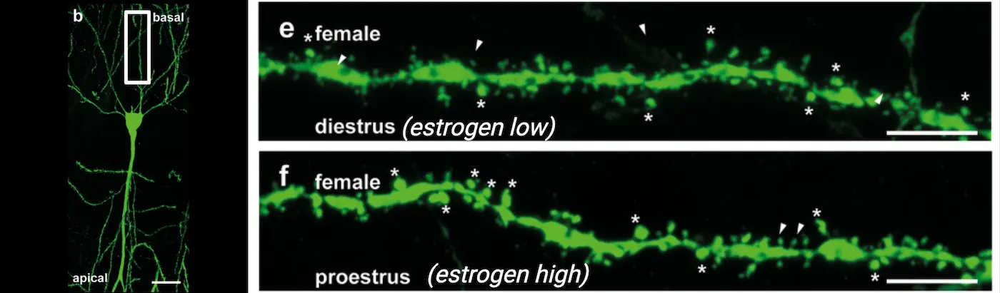
Have you ever pondered the complex interplay of factors that not only determine our sex but also shape how we behave and interact with the world? In this chapter, we will delve into the captivating world of sexual behavior and development, unraveling the intricate biological, psychological, and environmental threads that weave the rich tapestry of sex differences in both humans and other species.
Before outlining the structure of this chapter, I'd like to clarify some essential distinctions. First, we need to differentiate between 'sex' and 'gender.' While 'sex' refers to the biological differences between females and males, including chromosomes, hormone profiles, internal and external sex organs, 'gender' encompasses the socially and culturally constructed roles, behaviors, expressions, and identities of girls, women, boys, men, and gender-diverse people. Secondly, it's important to note that although this chapter occasionally uses the terms “males” and “females” to refer to the biological categories typically associated with female (XX chromosomes in mammals) or male (XY chromosomes in mammals), we must acknowledge the considerable variation in how these biological attributes are expressed, contributing to a broad spectrum of biological sex characteristics. Now, let's begin our exploration of how this chapter will unfold.
We begin by exploring the fundamentals of sexual reproduction and sexual dimorphism. Why does sexual reproduction exist, and what evolutionary advantages does it offer species that reproduce this way? You'll discover how the differentiation between sexes has evolved over millions of years, leading to a wide spectrum of physical and behavioral traits that define male and female forms across animal species. We will also examine sexual dimorphism beyond mere physical differences, focusing on how these distinctions manifest in behavior and even influence non-sexual traits.
As we delve deeper, the mechanisms that determine and differentiate sex will unfold. How are these mechanisms influenced by genetics and the environment? What roles do hormones play from the moment of conception and throughout life? Here, you'll learn about the organizational and activational effects of hormones, understanding how they sculpt our bodies and minds from the womb onwards and continue to influence us through adulthood.
The chapter progresses to explore how these foundational concepts of sex and development impact brain function and behavior. We will discuss how genetic, hormonal, and environmental factors converge to mold sex-specific brain architectures, leading to distinct patterns in stress responses, motivation, and social behaviors. This section will also highlight the critical role of epigenetic mechanisms, which illustrate how our environments interact with our genetic blueprint to produce lasting effects on our behavior and mental health.
Lastly, we will touch on the vulnerability to psychiatric diseases, examining how sex differences in brain and behavior can influence susceptibility to conditions like anxiety, depression, and other mental health disorders. You will see how new research is further uncovering the roles of brain-resident immune cells like microglia and mast cells in these processes, offering new perspectives on why males and females might experience and respond to psychological stress differently.
Throughout this chapter, our discussion will be grounded in scientific research, while also considering the broader implications of these findings for understanding human diversity and improving health outcomes. By the end of this chapter, you will have a comprehensive understanding of the intricate biological and social constructs that influence sexual behavior and development, equipped with a deeper appreciation for the complexity of life and the nuanced ways in which sex and gender manifest across the spectrum of life.
11.1Understanding Sexual Reproduction and Sexual Dimorphism
By the end of this section, you should be able to
- Describe the basics of sexual reproduction and its evolutionary significance
- Outline the steps involved in sexual reproduction, from gamete formation to zygote development
- Explain the concept of sexual dimorphism and sex differences and its manifestations across species
- Describe how sex differences can extend to physiological and behavioral traits beyond reproduction
Have you ever wondered why most species around you reproduce sexually, and why having two distinct sexes is so common? What are the benefits of sexual reproduction, and why are the two sexes in many species so different from each other?
In this section, we will explore the fascinating mechanisms of sexual reproduction, why it evolved, and how it drives sexual dimorphism. We'll uncover how these processes enhance genetic diversity and species adaptability. Additionally, we will delve into the concept of sex differences and how they often extend beyond traits directly related to reproduction, existing as a continuum rather than strict categories. We will examine how these differences influence physiological and behavioral processes such as sensory perception and responses to stress, and how understanding them can shed light on sex-specific vulnerabilities to psychiatric diseases in humans. By the end of this chapter, you'll have a deeper appreciation for the biological underpinnings of diversity and the complex interplay between sex and survival in the natural world.
Neuroscience across species: Evolution of Sexual Reproduction and Sexual Differentiation
Sexual reproduction is a fundamental process found across species from single-celled protists to all plants, fungi, and animals. As you can tell, sexual reproduction is incredibly common and a crucial part of today’s life on Earth! But what is sexual reproduction and why is it so widespread?
To understand the fundamentals of sexual reproduction, we must first review how cells carry genetic information. Genetic material is stored in DNA (deoxyribonucleic acid), organized into structures called chromosomes (see DNA and mitosis top panel). These chromosomes are kept within the cell’s nucleus.
![Two part diagram. Top half shows a condensed chromosome being pulled apart into a thread of double helix DNA and that double helix then unwinding to show paired nucleotide bases (As and Ts, Gs and Cs) as part of one gene. Bottom half shows steps of mitosis. 1) Diploid cell: Two copies of each chromosome are shown in a cell nucleus. 2) DNA replication: Chromosomes duplicate. Now there are two identical copies of each chromosome (chromatids). 3) Metaphase: Chromatids line up single file in the across the diameter of the nucleus. 4) Anaphase: Sister chromosomes are pulled apart. 5) Telephase/cytokinesis: Nuclear envelope material surrounds each set of chromosomes. 6) Two diploid cells are shown.](../assets/textbook/img/Image-11.33_DNA-and-Mitosis.webp)
Most cells in animals and plants are diploid, meaning they contain two sets of chromosomes: one inherited from each parent (we will go over how that works later in this section). This is why we often refer to having “23 pairs” of chromosomes in humans, rather than stating a total of 46. Every diploid cell in our bodies contains the exact same genetic information—exact copies of all chromosomes. But how is this uniformity achieved? The process begins at the very start of an individual’s life, starting from a single cell. To replicate itself, this cell first precisely duplicates each of its 46 chromosomes, resulting in two identical structures known as sister chromatids for each chromosome. Once every chromosome has been copied, the cell initiates mitosis, a type of cell division in which sister chromatids are evenly divided into two daughter cells, ensuring that each new cell receives a complete set of chromosomes (DNA and mitosis bottom panel). This division results in two identical diploid cells, each capable of further undergoing mitosis. Mitosis is crucial for the growth, development, and maintenance of multicellular organisms.
But you also learned that each copy of the chromosomes is inherited from one parent. This is possible thanks to sexual reproduction. So how does it work? At its most basic, sexual reproduction involves the steps shown in Meiosis and sexual reproduction: 1. Gamete Production: It all starts when each parent produces special reproductive cells called gametes—sperm in males and eggs in females. These aren't your typical diploid body cells; they're haploid, meaning they carry just one set of chromosomes. This haploidy is the result of a unique type of cell division known as meiosis, distinct from mitosis. Meiosis is special because it includes two rounds of genetic shuffling and cell division, but only one round of DNA replication. During the first division (meiosis I), the chromosomes that have already been duplicated are divided up into two new cells, each receiving one half of each chromosome pair. In the second division (meiosis II), which is similar to mitosis, the sister chromatids (the two identical halves of each duplicated chromosome) are separated. The end product? Four unique haploid gametes, each containing half as many chromosomes as the original cell. 2. Fertilization: Next comes the magic of fertilization, where two haploid gametes (one sperm and one egg) merge. This fusion creates a genetically unique, diploid cell known as a zygote. 3. Development: From there, the zygote embarks on an incredible journey, dividing through mitosis and differentiating into specialized tissues and organs, ultimately growing into a new individual.
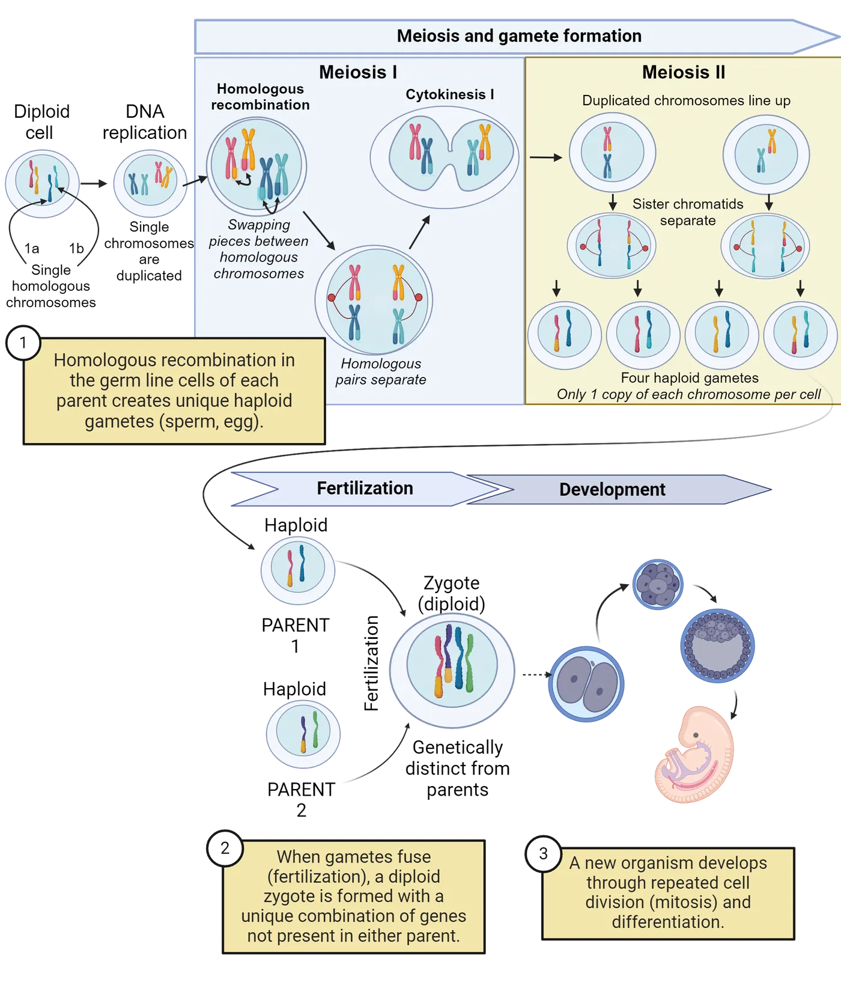
You might be asking yourself, why do organisms go through the complex process of producing specialized reproductive cells, searching for a compatible mate, and ultimately producing just one offspring by merging two gametes? Why not simply use mitosis to create genetically identical offspring, which seems much simpler and less risky?
There are two main hypotheses explaining this phenomenon. The first suggests that sexual reproduction evolved as a way to mask the expression of harmful mutations, effectively buffering genetic defects within a population (Michod and Gayley 1992). The second proposes that sexual reproduction serves as a mechanism to increase genetic variation, thus equipping organisms with the ability to adapt more rapidly to changing environmental conditions (McDonald, Rice, and Desai 2016). To understand how this works, we need to consider what it means to have two copies of each chromosome, one inherited from each parent.
First, due to the diploid nature of sexually reproducing organisms, where each parent contributes one version of each chromosome, or an allele, sexual reproduction plays a crucial role in shielding organisms from harmful mutations. Imagine if a harmful mutation is passed down from one parent; the normal allele from the other parent might counteract this defect, maintaining a healthy appearance or phenotype in the offspring. On the other hand, asexual reproduction, which clones the parent to produce offspring, doesn't provide this safeguard. Since the offspring are genetic copies of the parent, any mutations are directly passed on without the possibility of being diluted by a normal allele from another parent. Consequently, harmful mutations are more likely to show up and affect the organism, as there’s no genetic variation to help mask their effects.
Second, diploidy can contribute to genetic diversity. There are two main ways diploidy generates this increased diversity. First, diploidy allows for generation of offspring which collectively can have differing combinations of alleles for an individual gene. Consider a hypothetical example involving thermal tolerance in fish—a trait that might be influenced by different alleles. For simplicity, let's assume there are two alleles: one for low thermal tolerance (T), which is dominant and allows the fish to thrive in cooler waters, and one for high thermal tolerance (t), which is recessive and makes the fish more suited to warmer waters. Suppose both parents are heterozygous, carrying one T allele and one t allele. Because the T allele is dominant, these parents can comfortably handle cooler temperatures. When these fish reproduce, their offspring inherit various combinations of these alleles, which we can visualize using a Punnett square (Punnett square). In this scenario, approximately 50% of the offspring will inherit one T and one t allele, mirroring the thermal tolerance of their parents. About 25% will inherit two T alleles, potentially enhancing their tolerance for even colder temperatures than their parents can handle. The remaining 25% will receive two t alleles, making them better adapted to warmer waters. If environmental changes lead to warmer river temperatures, the offspring with a higher tolerance for heat are more likely to survive and reproduce. Over time, this could result in a population that is better adapted to the new, warmer environment. Without this genetic variation resulting from sexual reproduction, the fish population would be less capable of adapting to such changes.
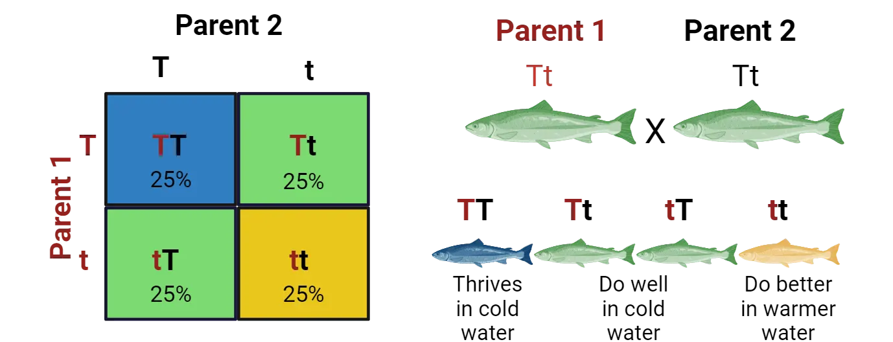
The second way genetic diversity is increased during meiosis I happens in a process called homologous recombination. The top panel of Meiosis and sexual reproduction (step 1) diagrams an overview of this idea, showing how pieces of the two parental copies of a chromosome in a developing gamete swap places, resulting in two new chromosomes that each contain a unique mix of sections from the parental chromosomes. This mixing creates new combinations of genes that are not found in either parent. As a result, each gamete formed during meiosis carries a unique set of genetic instructions. This genetic diversity increases the likelihood that offspring will have genetic variations, some of which may be beneficial for survival in a changing environment.
So now we know why sexual reproduction may have evolved; to protect against harmful mutations and to enhance genetic diversity. However, this doesn’t explain why most species have two distinct gametes. If organisms produced identical gametes—for instance, if all individuals only produced eggs instead of eggs and sperm—the eggs could theoretically fuse together to form a diploid zygote. This method would seem less costly because it wouldn’t limit individuals to mating only with those of a different type, thus expanding the potential pool of reproductive partners. So, why do most organisms have two distinct gametes?
One hypothesis proposed is that gamete types serve to avoid inbreeding by preventing fertilization between genetically identical or closely related members (Czárán and Hoekstra 2004). To illustrate this, consider a population of aquatic organisms where no distinction exists based on gamete types. In this scenario, all individuals release their gametes into the water, where any gamete can fuse with any other gamete. This lack of discrimination could lead to gametes coming from the same parent inadvertently fusing, undermining the benefits of sexual reproduction—namely, the reduction of harmful genetic mutations and the promotion of genetic diversity. Therefore, a population of organisms producing two distinct gamete types, each of which can only fuse with the opposite type, may have had an evolutionary advantage by reducing the likelihood of clonally related gametes fusing and thus promoting genetic diversity.
Interestingly, the existence of two distinct gametes profoundly influences the evolution of both physical and behavioral differences between sexes in many species, leading to a phenomenon known as sexual dimorphism.
Sexual Dimorphism
You may have noticed that in many species, males and females exhibit distinct physical features. For example, it is more common for male lions display a mane than female lions, and male Northern Cardinals are bright red with a distinctive crest and a loud, clear song, while females are pale brown with a slightly reddish tinge and a more subdued call (Examples of sexually dimorphic external physical appearances in nature). This phenomenon, known as sexual dimorphism, is prevalent throughout the animal kingdom and often extends beyond primary sex traits (i.e., traits directly involved in sexual reproduction, such as gonads or reproductive organs). But what drives these differences between males and females, and what purpose do they serve?
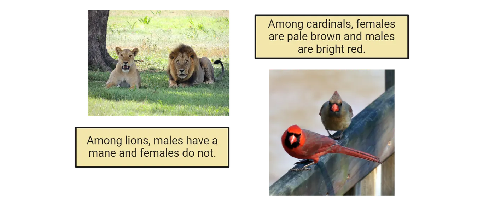
Before we dive in, it's essential to grasp the concept of natural selection. Natural selection is a key mechanism in evolution where individuals with certain traits that are beneficial in their environment tend to survive and reproduce more successfully than others. This process begins with genetic variation within a population, where different traits—such as tolerating higher or lower water temperatures in the fish example we discussed—can significantly influence an individual's survival. Those who survive longer have more opportunities to reproduce, and therefore pass these advantageous traits to their offspring. On the other side, if a trait does not help the individuals’ survival, this individual will likely not get a chance to reproduce and therefore, over time, this trait may be lost. This leads us to a special subset of natural selection known as sexual selection, which focuses on traits that are advantageous for mating rather than just survival. These concepts can help us understand the classical view of why sexual dimorphism is so widespread.
This view, first proposed by Darwin (Darwin, Bonner, and May 1981) and further developed by an English geneticist Angus John Bateman (Bateman 1948), centers on the observation that in most sexually reproducing species, males produce many small, mobile gametes (sperm), while females produce fewer, larger, and less mobile gametes (eggs), although accumulating studies suggest that this phenomenon is more complex than initially thought (Clutton-Brock 2007). As an example, look at Female versus male gametes to see the relative size of a mouse egg surrounded by many sperm. Because sperm production is relatively inexpensive energetically, males have the potential to fertilize multiple females, a strategy that minimizes their investment in any single offspring (Trivers 1972). This leads to intense competition among males for access to mates. When two individuals of the same sex compete for access to the opposite sex, this is known as intrasexual selection, a type of sexual selection. Because of male-male competition, males often develop secondary sex traits that enhance their competitiveness in obtaining mates, such as larger body size, elaborate ornamentation, or dominant behaviors.
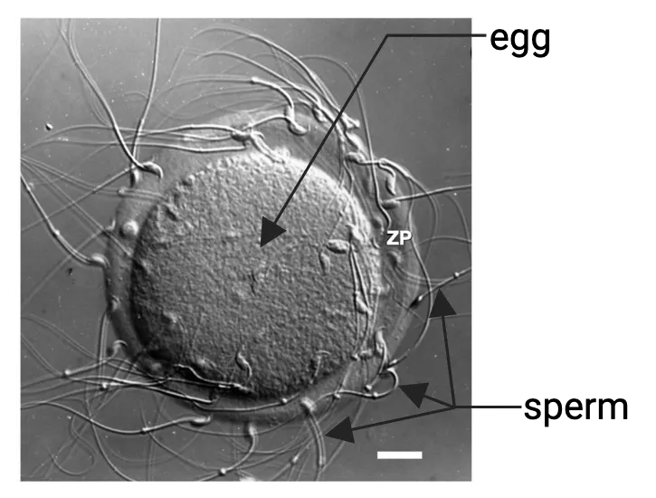
One notable example of intrasexual selection driving male-biased physical and behavioral traits is observed in elephant seals (Mirounga angustirostris). During the breeding season, male elephant seals gather on beaches to establish territories and compete for access to females. These males use their behavior, size, and strength to intimidate rivals and establish dominance. The bigger and more dominant males can mate with multiple females, while less dominant males are often excluded from mating opportunities (Le Boeuf, 1974) (Male and female elephant seal). As a result of this biased reproductive success, male elephant seals have evolved to be much bigger and dominant than females. This is intrasexual selection because females do not choose their mates; rather, it is the strength and dominance of the males that determine their access to females.
In contrast to males, females in most species are constrained in their reproductive potential by producing a finite number of energetically expensive gametes. Consequently, females typically invest more time and resources in parental care (Trivers 1972) and exhibit greater selectivity in mate choice, preferring to mate with males that possess the most favorable genetic or phenotypic traits. This one-sided mate selectiveness is known as intersexual selection.
A compelling example of intersexual selection are Satin Bowerbirds (Ptilonorhynchus violaceus). In this species, the females, who are solely responsible for rearing the young, also make critical mating decisions. Their choice of partner is heavily influenced by the male's ability to construct and decorate elaborate structures known as bowers. These bowers are not merely nests, but elaborate displays crafted from twigs and adorned with an array of colorful objects collected by the males. Additionally, the males perform intricate courtship displays, which include unique dances and a variety of vocalizations. To see a video of these behaviors, look here: https://www.youtube.com/watch?v=nWfyw51DQfU. Females prefer males who excel not only in their architectural skills but also in their performance abilities. This preference drives the evolution of increasingly complex bower designs and more sophisticated courtship behaviors, which comes at a cost to the male. This is intersexual selection because females actively choose their mates based on these elaborate displays and behaviors, influencing the traits that evolve in males (Borgia 1985).
While there are many examples of male-biased development of secondary traits, it's important to note that this is not always the case. An interesting example of female-biased development of secondary traits is the spotted hyena (Crocuta crocuta). Spotted hyenas are social animals that live in large communities called "clans," where females and males have distinct dominance hierarchies. In this species, females typically dominate males, with even low-ranking females often dominating high-ranking males. Females exhibit high levels of aggressiveness and develop virilized genitalia that closely resemble male genitals, with the clitoris forming an erectile pseudo-penis (Goymann, East, and Hofer 2001). As another examples of non-male bias in secondary traits, there are also many species where males and females are almost indistinguishable, and both contribute to raising their young. For instance, the California mouse (Peromyscus californicus) is a monogamous rodent in which both males and females share parental responsibilities, are similar in size and weight, and both aggressively defend their shared territories (Ribble 2003).
Lastly, a very interesting concept within sexual selection is sexual conflict, which occurs when the reproductive interests of males and females diverge, leading to evolutionary arms races between the sexes. A striking example of this is seen in the genitalia of ducks. In many duck species, males have evolved long, corkscrew-shaped penises, which facilitate forced copulations. In response, females have developed complex, labyrinthine vaginal tracts that can control the outcome of these forced encounters. This intricate anatomy allows females to limit successful fertilization to preferred males, despite the coercive strategies of others. This evolutionary battle between male persistence and female choice exemplifies how sexual conflict can drive the development of highly specialized and often bizarre reproductive traits in both sexes.
Moving beyond these examples, it's clear that both intersexual and intrasexual selection, as well as sexual conflict, which can all occur simultaneously in most species, have played significant roles in shaping distinct physical and behavioral traits in females and males over evolutionary time. However, sex differences encompass more than just sexual dimorphism related to reproductive success. They may arise as secondary consequences of traits linked to reproductive success, from trade-offs between reproductive investment and other biological functions, or from various social and environmental factors, among others. Regardless of the underlying causes, we are increasingly discovering that sex differences are present in a wide spectrum of physiological and behavioral characteristics. As we will explore, these differences have profound implications for our understanding of health and disease in both human and non-human animals.
Sex Differences in Non-Sexual Traits
Before delving deeper into sex differences, it is crucial to distinguish them from sexual dimorphism. Sexual dimorphism, which we focused on in the previous section, refers to the presence of two distinct forms of a characteristic (behavioral, physiological, or morphological) that are exclusively or predominantly found in either males or females (for example, male lions have manes, females don’t). In contrast, sex differences span a continuum. In other words, while there are average differences between the sexes, males and females may exhibit a range of variations. For example, women typically have more adipose mass, higher circulating free fatty acids, and greater insulin sensitivity in metabolism compared to men. Despite these average differences, when you look at the whole population you can still find individual men that exhibit higher levels of these factors than some women. Similarly, women tend to have a higher resting heart rate and contractility but lower cardiac output than men and generally display stronger immune responses (which may contribute to the higher incidence of diseases such as multiple sclerosis (Català-Senent et al. 2023) and Alzheimer's in women (Casaletto et al. 2022)), but this may not apply to every single individual studied. This difference between a sexual dimorphism and a sex difference is illustrated in Sexual dimorphism versus sex difference. The image shows the distributions of a trait that shows sexual dimorphism versus a trait that shows a sex difference. Note how the sexual dimorphism distribution is almost completely separate between males and females. The trait with a sex difference, in contrast, shows a difference between the average male and female but the distribution of the observed trait in the two sexes overlaps substantially.
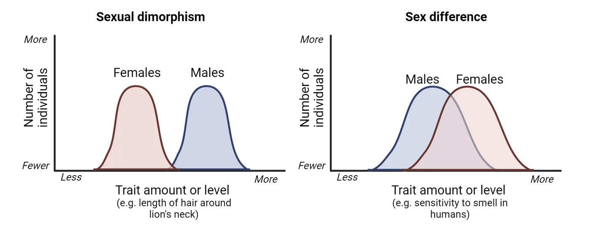
Sex differences are extensive. Indeed, since the inclusion of both sexes in preclinical and clinical studies (see Why Including Sex as a Biological Variable Matters in Biomedical Research), sex differences have been observed in virtually every biological system studied. However, for the scope of this chapter, here we will specifically focus on sex differences in behaviors by exploring examples that are fundamental to everyday functioning and may have significant implications for psychiatric diseases. Later in this chapter, we will delve into the biological mechanisms underlying these sex differences in behavior.
One interesting difference between sexes is associated with sensory perception and processing. For example, compared to men, women tend to show increased sensitivity to smell (Sorokowski et al. 2019), auditory stimuli (Aloufi et al. 2023), and pain (Mogil 2012). This could contribute to women showing higher incidence of chronic pain conditions (Osborne and Davis 2022), and men displaying much greater age-related hearing loss than women do (Pedersen, Rosenhall, and Møller 1989). While the increased sensitivity to sensory stimuli in women may result from psychosocial influences- like gender roles that shape distinct emotional and/or sensory experiences for men and women (Ohla and Lundström 2013; Schroeder 2010)- findings in other animals suggest that at least some of these differences are mediated by biological factors. For instance, compared to their male counterparts, female rodents display heightened pain sensitivity (Ro et al. 2020; Tang et al. 2017) and more acute sense of smell (Baum and Keverne 2002), which could have evolved to meet the distinct demands of each sex's reproductive roles. For example, heightened sensitivity to olfactory and auditory stimuli in females could facilitate maternal behaviors by improving a female's ability to detect and respond to offspring cues as well as predators that pose a threat to vulnerable pups, while males may have evolved reduced pain sensitivity as an adaptation to engage more effectively in physical confrontations with rivals without being incapacitated by injuries, thereby increasing their chances of securing mating opportunities with females. Importantly, these differences in sensory processing could also be linked to differences in perception of stressors and the subsequent physiological and psychological responses in males vs. females.
Sex differences in human behavior extend beyond sensory system effects. For example, how males and females respond to the experience of stress differs on average. Importantly, these sex differences may play a role in the marked disparity in the prevalence of stress-related psychiatric disorders between males and females. We will explore this topic much further in Sex Differences in Brain Circuits and Susceptibility to Psychiatric Disease.
In sum, there are important sex differences in the way males vs. females perceive and respond to the world. Many of these differences can be found in non-human animal models, suggesting biological causes. However, as we discussed in the introduction to this chapter, it is crucial to recognize that in humans, gender—defined by the socially transmitted characteristics associated with femininity and masculinity—interacts with biological sex to influence health and disease processes throughout the lifespan (Arcand et al. 2023; Nielsen et al. 2021). This interaction highlights the complexity of human health and underscores the importance of considering both biological sex and gender in medical research and healthcare practices.
Summary
In this section, we first explored the concept of sexual reproduction, examining its underlying mechanisms and the evolutionary advantages, including genetic diversity and masking of harmful mutations, that have made it so widespread across nature. We also learned that many times, animals engage in sexual behavior without the intent of reproduction, and that same-sex sexual behavior is widespread in nature. We then discussed how the initial reproductive investment of each sex, such as the larger, more energetically costly eggs produced by females compared to the smaller, less costly sperm produced by males, can lead to different strategies between males and females to maximize reproductive success and evolutionary fitness. We also explored the dynamics of intrasexual competition, where individuals of the same sex compete for access to mates, often resulting in the development of traits like larger body size or aggressive behaviors. Additionally, we examined intersexual competition, where mate choice drives the evolution of traits that are attractive to the opposite sex, such as elaborate plumage or intricate courtship behaviors. Finally, we explored how sex differences affect many physiological and behavioral processes beyond reproductive traits, including sensory perception and stress responses, highlighting the critical importance of incorporating biological sex as a variable in biomedical research.
Key terms
Sexual reproduction, sexual dimorphism, sex differences, stress, mitosis, gamete production, fertilization, development, intrasexual selection, intersexual selection, sexual conflictReferences
Aloufi, N., Heinrich, A., Marshall, K., & Kluk, K. (2023). Sex differences and the effect of female sex hormones on auditory function: A systematic review. Frontiers in Human Neuroscience, 17(April). https://doi.org/10.3389/fnhum.2023.1077409.
Arcand, M., Bilodeau-Houle, A., Juster, R.-P., & Marin, M.-F. (2023). Sex and gender role differences on stress, depression, and anxiety symptoms in response to the COVID-19 pandemic over time. Frontiers in Psychology, 14(May), 1166154. https://doi.org/10.3389/fpsyg.2023.1166154.
Bagemihl, B. (1999). Biological exuberance: Animal homosexuality and natural diversity. New York: St. Martin’s Press. http://archive.org/details/biologicalexuber00bage.
Bateman, A. J. (1948). Intra-sexual selection in Drosophila . Heredity, 2(Pt. 3), 349–368. https://doi.org/10.1038/hdy.1948.21.
Baum, M. J., & Keverne, E. B. (2002). Sex difference in attraction thresholds for volatile odors from male and estrous female mouse urine. Hormones and Behavior , 41(2), 213–219. https://doi.org/10.1006/hbeh.2001.1749.
Bergsten, J., & Miller, K. B. (2007). Phylogeny of diving beetles reveals a coevolutionary arms race between the sexes. PloS One, 2(6), e522. https://doi.org/10.1371/journal.pone.0000522.
Borgia, G. (1985). Bower quality, number of decorations and mating success of male satin bowerbirds (Ptilonorhynchus violaceus): An experimental analysis. Animal Behaviour, 33(1), 266–271. https://doi.org/10.1016/S0003-3472(85)80140-8.
Boyd, A., Van de Velde, S., Vilagut, G., de Graaf, R., O׳Neill, S., Florescu, S., Alonso, J., & Kovess-Masfety, V. (2015). Gender differences in mental disorders and suicidality in Europe: Results from a large cross-sectional population-based study. Journal of Affective Disorders, 173(March), 245–254. https://doi.org/10.1016/j.jad.2014.11.002.
Casaletto, K. B., Nichols, E., Aslanyan, V., Simone, S. M., Rabin, J. S., La Joie, R., Brickman, A. M., et al. (2022). Sex-specific effects of microglial activation on Alzheimer’s disease proteinopathy in older adults. Brain: A Journal of Neurology , 145(10), 3536–3545. https://doi.org/10.1093/brain/awac257.
Català-Senent, J. F., Andreu, Z., Hidalgo, M. R., Soler-Sáez, I., Roig, F. J., Yanguas-Casás, N., Neva-Alejo, A., et al. (2023). A deep transcriptome meta-analysis reveals sex differences in multiple sclerosis. Neurobiology of Disease, 181(June), 106113. https://doi.org/10.1016/j.nbd.2023.106113.
Clive, J., Flintham, E., & Savolainen, V. (2023). Same-sex sociosexual behaviour is widespread and heritable in male rhesus macaques. Nature Ecology & Evolution, 7(8), 1287–1301. https://doi.org/10.1038/s41559-023-02111-y.
Clutton-Brock, T. (2007). Sexual selection in males and females. Science, 318(5858), 1882–1885. https://doi.org/10.1126/science.1133311.
Czárán, T. L., & Hoekstra, R. F. (2004). Evolution of sexual asymmetry. BMC Evolutionary Biology, 4(1), 34. https://doi.org/10.1186/1471-2148-4-34.
Dalla, C., Antoniou, K., Kokras, N., Drossopoulou, G., Papathanasiou, G., Bekris, S., Daskas, S., & Papadopoulou-Daifoti, Z. (2008). Sex differences in the effects of two stress paradigms on dopaminergic neurotransmission. Physiology & Behavior, 93(3), 595–605. https://doi.org/10.1016/j.physbeh.2007.10.020.
Darwin, C., Bonner, J. T., & May, R. M. (1981). The descent of man, and selection in relation to sex. REV-Revised. Princeton University Press. https://www.jstor.org/stable/j.ctt19zbz6c.
Drossopoulou, G., Antoniou, K., Kitraki, E., Papathanasiou, G., Papalexi, E., Dalla, C., & Papadopoulou-Daifoti, Z. (2004). Sex differences in behavioral, neurochemical and neuroendocrine effects induced by the forced swim test in rats. Neuroscience , 126(4), 849–857. https://doi.org/10.1016/j.neuroscience.2004.04.044.
Duque-Wilckens, N., Steinman, M. Q., Busnelli, M., Chini, B., Yokoyama, S., Pham, M., Laredo, S. A., et al. (2018). Oxytocin receptors in the anteromedial bed nucleus of the stria terminalis promote stress-induced social avoidance in female California mice. Biological Psychiatry, 83(3), 203–213. https://doi.org/10.1016/j.biopsych.2017.08.024.
Durbeej, N., Sörman, K., Norén Selinus, E., Lundström, S., Lichtenstein, P., Hellner, C., & Halldner, L. (2019). Trends in childhood and adolescent internalizing symptoms: Results from Swedish population based twin cohorts. BMC Psychology , 7(1), 50. https://doi.org/10.1186/s40359-019-0326-8.
Ellis, B. H., Fisher, P. A., & Zaharie, S. (2004). Predictors of disruptive behavior, developmental delays, anxiety, and affective symptomatology among institutionally reared Romanian children. Journal of the American Academy of Child and Adolescent Psychiatry, 43(10), 1283–1292. https://doi.org/10.1097/01.chi.0000136562.24085.160.
Emlen, S. T., & Wrege, P. H. (2004). Division of labour in parental care behaviour of a sex-role-reversed shorebird, the wattled jacana. Animal Behaviour , 68(4), 847–855. https://doi.org/10.1016/j.anbehav.2003.08.034.
Gómez, J. M., Gónzalez-Megías, A., & Verdú, M. (2023). The evolution of same-sex sexual behaviour in mammals. Nature Communications, 14(1), 5719. https://doi.org/10.1038/s41467-023-41290-x.
Goymann, W., East, M. L., & Hofer, H. (2001). Androgens and the role of female ‘hyperaggressiveness’ in spotted hyenas (Crocuta crocuta). Hormones and Behavior, 39(1), 83–92. https://doi.org/10.1006/hbeh.2000.1634.
Hodes, G. E., Pfau, M. L., Purushothaman, I., Ahn, H. F., Golden, S. A., Christoffel, D. J., Magida, J., et al. (2015). Sex differences in nucleus accumbens transcriptome profiles associated with susceptibility versus resilience to subchronic variable stress. The Journal of Neuroscience: The Official Journal of the Society for Neuroscience, 35(50), 16362–16376. https://doi.org/10.1523/JNEUROSCI.1392-15.2015.
Kelly, M. M., Tyrka, A. R., Anderson, G. M., Price, L. H., & Carpenter, L. L. (2008). Sex differences in emotional and physiological responses to the Trier social stress test. Journal of Behavior Therapy and Experimental Psychiatry, 39(1), 87–98. https://doi.org/10.1016/j.jbtep.2007.02.003.
Kessler, R. C., Petukhova, M., Sampson, N. A., Zaslavsky, A. M., & Wittchen, H.-U. (2012). Twelve-month and lifetime prevalence and lifetime morbid risk of anxiety and mood disorders in the United States. International Journal of Methods in Psychiatric Research, 21(3), 169–184. https://doi.org/10.1002/mpr.1359.
Kirschbaum, C., Wüst, S., & Hellhammer, D. (1992). Consistent sex differences in cortisol responses to psychological stress. Psychosomatic Medicine, 54(6), 648–657. https://doi.org/10.1097/00006842-199211000-00004.
Laredo, S. A., Steinman, M. Q., Robles, C. F., Ferrer, E., Ragen, B. J., & Trainor, B. C. (2015). Effects of defeat stress on behavioral flexibility in males and females: Modulation by the mu-opioid receptor. The European Journal of Neuroscience , 41(4), 434–441. https://doi.org/10.1111/ejn.12824.
Le Boeuf, B. J. (1974). Male-male competition and reproductive success in elephant seals. American Zoologist, 14(1), 163–176. https://doi.org/10.1093/icb/14.1.163.
Lighthall, N. R., Mather, M., & Gorlick, M. A. (2009). Acute stress increases sex differences in risk seeking in the balloon analogue risk task. PloS One, 4(7), e6002. https://doi.org/10.1371/journal.pone.0006002.
Michod, R. E., & Gayley, T. W. (1992). Masking of mutations and the evolution of sex. The American Naturalist, 139(4), 706–734.
Mogil, J. S. (2012). Sex differences in pain and pain inhibition: Multiple explanations of a controversial phenomenon. Nature Reviews Neuroscience, 13(12), 859–866. https://doi.org/10.1038/nrn3360.
Nickels, N., Kubicki, K., & Maestripieri, D. (2017). Sex differences in the effects of psychosocial stress on cooperative and prosocial behavior: Evidence for ‘flight or fight’ in males and ‘tend and befriend’ in females. Adaptive Human Behavior and Physiology, 2(3), 171–183. https://doi.org/10.1007/s40750-017-0062-3.
Nielsen, M. W., Stefanick, M. L., Peragine, D., Neilands, T. B., Ioannidis, J. P. A., Pilote, L., Prochaska, J. J., et al. (2021). Gender-related variables for health research. Biology of Sex Differences, 12(1), 23. https://doi.org/10.1186/s13293-021-00366-3.
Ohla, K., & Lundström, J. N. (2013). Sex differences in chemosensation: Sensory or emotional? Frontiers in Human Neuroscience, 7(September). https://doi.org/10.3389/fnhum.2013.00607.
Orsini, C. A., Blaes, S. L., Hernandez, C. M., Betzhold, S. M., Perera, H., Wheeler, A.-R., Ten Eyck, T. W., Garman, T. S., Bizon, J. L., & Setlow, B. (2021). Regulation of risky decision making by gonadal hormones in males and females. Neuropsychopharmacology, 46(3), 603–613. https://doi.org/10.1038/s41386-020-00827-0.
Osborne, N. R., & Davis, K. D. (2022). Sex and gender differences in pain. International Review of Neurobiology, 164, 277–307. https://doi.org/10.1016/bs.irn.2022.06.013.
Padkapayeva, K., Gilbert-Ouimet, M., Bielecky, A., Ibrahim, S., Mustard, C., Brisson, C., & Smith, P. (2018). Gender/sex differences in the relationship between psychosocial work exposures and work and life stress. Annals of Work Exposures and Health, 62(4), 416–425. https://doi.org/10.1093/annweh/wxy014.
Pedersen, K. E., Rosenhall, U., & Møller, M. B. (1989). Changes in pure-tone thresholds in individuals aged 70-81: Results from a longitudinal study. Audiology: Official Organ of the International Society of Audiology, 28(4), 194–204. https://doi.org/10.3109/00206098909081624.
Reschke-Hernández, A. E., Okerstrom, K. L., Edwards, A. B., & Tranel, D. (2017). Sex and stress: Men and women show different cortisol responses to psychological stress induced by the Trier social stress test and the Iowa singing social stress test. Journal of Neuroscience Research, 95(1–2), 106–114. https://doi.org/10.1002/jnr.23851.
Ribble, D. O. (2003). The evolution of social and reproductive monogamy in Peromyscus: Evidence from Peromyscus californicus (the California mouse). In C. Boesch & U. H. Reichard (Eds.), Monogamy: Mating strategies and partnerships in birds, humans and other mammals (pp. 81–92). Cambridge University Press. https://doi.org/10.1017/CBO9781139087247.005.
Ro, J. Y., Zhang, Y., Tricou, C., Yang, D., da Silva, J. T., & Zhang, R. (2020). Age and sex differences in acute and osteoarthritis-like pain responses in rats. The Journals of Gerontology: Series A, 75(8), 1465–1472. https://doi.org/10.1093/gerona/glz186.
Schroeder, J. A. (2010). Sex and gender in sensation and perception. In J. C. Chrisler & D. R. McCreary (Eds.), Handbook of gender research in psychology: Volume 1: Gender research in general and experimental psychology (pp. 235–257). New York, NY: Springer. https://doi.org/10.1007/978-1-4419-1465-1_12.
Seedat, S., Scott, K. M., Angermeyer, M. C., Berglund, P., Bromet, E. J., Brugha, T. S., Demyttenaere, K., et al. (2009). Cross-national associations between gender and mental disorders in the World Health Organization World Mental Health Surveys. Archives of General Psychiatry, 66(7), 785–795. https://doi.org/10.1001/archgenpsychiatry.2009.36.
Sommer, V., & Vasey, P. L. (2006). Homosexual behaviour in animals: An evolutionary perspective. Cambridge University Press.
Sorokowski, P., Karwowski, M., Misiak, M., Marczak, M. K., Dziekan, M., Hummel, T., & Sorokowska, A. (2019). Sex differences in human olfaction: A meta-analysis. Frontiers in Psychology, 10(February). https://doi.org/10.3389/fpsyg.2019.00242.
Stroud, L. R., Salovey, P., & Epel, E. S. (2002). Sex differences in stress responses: Social rejection versus achievement stress. Biological Psychiatry , 52(4), 318–327. https://doi.org/10.1016/S0006-3223(02)01333-1.
Tang, C., Li, J., Tai, W. L., Yao, W., Zhao, B., Hong, J., Shi, S., Wang, S., & Xia, Z. (2017). Sex differences in complex regional pain syndrome type I (CRPS-I) in mice. Journal of Pain Research, 10(July), 1811–1819. https://doi.org/10.2147/JPR.S139365.
Trivers, R. (1972). Parental investment and sexual selection. In B. Campbell (Ed.), Sexual selection and the descent of man (pp. 136–179). Aldine Publishing Company.
Williams, E. S., Manning, C. E., Eagle, A. L., Swift-Gallant, A., Duque-Wilckens, N., Chinnusamy, S., Moeser, A., Jordan, C., Leinninger, G., & Robison, A. J. (2020). Androgen-dependent excitability of mouse ventral hippocampal afferents to nucleus accumbens underlies sex-specific susceptibility to stress. Biological Psychiatry, 87(6), 492–501. https://doi.org/10.1016/j.biopsych.2019.08.006.
Youssef, F. F., Bachew, R., Bissessar, S., Crockett, M. J., & Faber, N. S. (2018). Sex differences in the effects of acute stress on behavior in the ultimatum game. Psychoneuroendocrinology, 96(October), 126–131. https://doi.org/10.1016/j.psyneuen.2018.06.012.
Practice The multiple-choice and fill-in-the-blank questions for this section are interactive and live on OpenStax, so they are not carried here: open the book on openstax.org.
11.2Mechanisms of Sexual Determination and Differentiation
By the end of this section, you should be able to
- Identify the basic principles and diversity of sex determination mechanisms, including genetic and environmental sex determination
- Describe the extensive variety in sex determination mechanisms across species, and how this diversity challenges the conventional view of a widespread male-female fixed dichotomy
- Define what steroid hormones are and describe the concept of organizational and activational effects driving the differentiation of tissues into male or female-like forms
In the previous section, we explored hypotheses explaining the evolution and conservation of sexual reproduction and sexual dimorphism across eukaryotes, highlighting their impacts on male and female biology beyond reproductive contexts. But how is it decided whether an individual becomes a biological male or female? In this section, we will delve into the fascinating biological mechanisms underlying sex determination. We will explore how these mechanisms vary widely across different species, from the well-studied genetic sex determination in humans to the remarkable environmental influences observed in other organisms. Additionally, we will examine how a special group of hormones produced by the reproductive organs in each sex further drive the differentiation of tissues into male or female-like forms, acting both early in development and later in life.
Developmental perspective: Genetic and Ecological Factors of Sex Determination
One of the most fascinating aspects of sex determination is its remarkable diversity across species (Nagahama et al. 2021). Animals belonging to species that reproduce sexually, and therefore have two sexes, all start development with what we call bipotential gonads. Gonads are the reproductive tissue that will produce gametes (eggs in female mammals or sperm in male mammals, for example). Bipotential gonads are the undifferentiated gonads that are apparently identical at early stages of embryonic development in both sexes. During the early embryonic stage of development, these gonads differentiate into either testes or ovaries. While all species require a cue to trigger the differentiation of the bipotential gonads, this cue varies significantly. In some species, it is based on genetic factors (genetic sex determination); in others, environmental cues such as temperature play a critical role (environmental sex determination); and in some species, sex determination involves a combination of genetic and environmental factors. Remarkably, although rare, some fish species even change sex within an individual's lifetime through a process called sequential hermaphroditism. Let’s delve into each of these mechanisms.
Genetic Sex Determination
To grasp the concept of genetic sex determination, let’s first revisit how genetic information is organized within our cells. Our genetic material, DNA, is packaged into structures called chromosomes. In cells with two sets of chromosomes, known as diploid cells, there is a pair of each chromosome type. Among these pairs, one special pair comprises the sex chromosomes, which play a critical role in determining an individual's sex by carrying genes specific to sexual development and reproductive functions. The other chromosomes are known as autosomes, and they carry genes that are responsible for a wide array of bodily functions and characteristics, such as enzyme production and hair color, but do not directly determine sex.
In most mammals, including humans, the sex chromosomes are designated as X and Y. Females have two X chromosomes (XX), while males possess one X and one Y chromosome (XY). During meiosis—the process that produces reproductive cells, or gametes—these chromosomes are segregated so that each gamete ends up with just one copy of each chromosome, including one sex chromosome. Consequently, all eggs produced by females contain an X chromosome. However, males produce sperm that may carry either an X or a Y chromosome. The sex of the resulting embryo is then determined at fertilization, depending on whether it receives an X or a Y from the sperm, alongside an X from the egg. The combination of these chromosomes (XX for females and XY for males) establishes the genetic sex of the embryo (Genetic determination of sex in mammals). So how does this work?
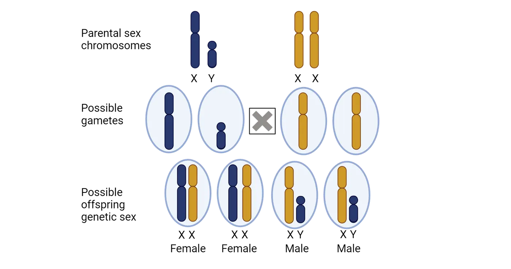
The Y chromosome carries a crucial gene called the sex-determining region Y (SRY in humans, Sry in mice), sometimes also referred to as “testes determining factor” or “TDF” , which is key to initiating the development of testes (Step 1 in X- and Y-driven genetic sex determination of tissue differentiation) (Kashimada and Koopman 2010). SRY expression activates another gene called Sox9, a gene located in a non-sex chromosome, which in turn guides the differentiation of somatic cells in the bipotential gonads into Sertoli cells, which are essential for supporting and nurturing the developing sperm cells, defining the initial stage in the development of the embryonic testis (Step 2 in X- and Y-driven genetic sex determination of tissue differentiation). Sertoli cells will orchestrate the further differentiation of the male reproductive organs through two main mechanisms: the induction of Leydig cell development in the testes—which will secrete of testosterone—and the secretion of anti-Müllerian hormone directly from the Sertoli cells (Step 3 in X- and Y-driven genetic sex determination of tissue differentiation). During the earlier stages of development, the internal reproductive tract is similar in both sexes and consists of a set of two ducts, the Wolffian and Müllerian ducts, which will eventually become the male or female internal reproductive organs, respectively. Leydig cells will produce androgens (sex hormones more abundant in males) such as testosterone, which will promote the differentiation of the Wolffian duct to develop into male internal genitalia, such as the epididymis, vas deferens, and seminal vesicles (Step 4 in X- and Y-driven genetic sex determination of tissue differentiation). At the same time, the anti-Müllerian hormone will result in the degeneration of the Müllerian duct, preventing the development of female internal genitalia such as the uterus and fallopian tubes (also Step 4).

The basic anatomy of these changes in the ducts with differentiation into a male phenotype is shown on bottom of Wolffian and Müllerian duct system development. It is important to mention that although SRY is key in this process, it is not the only mechanism underlying gonadal determination, and instead it is complemented by a complex network of genes whose balanced expression levels either activate the testis pathway and simultaneously repress the ovarian pathway or vice versa(Nagahama et al. 2021).
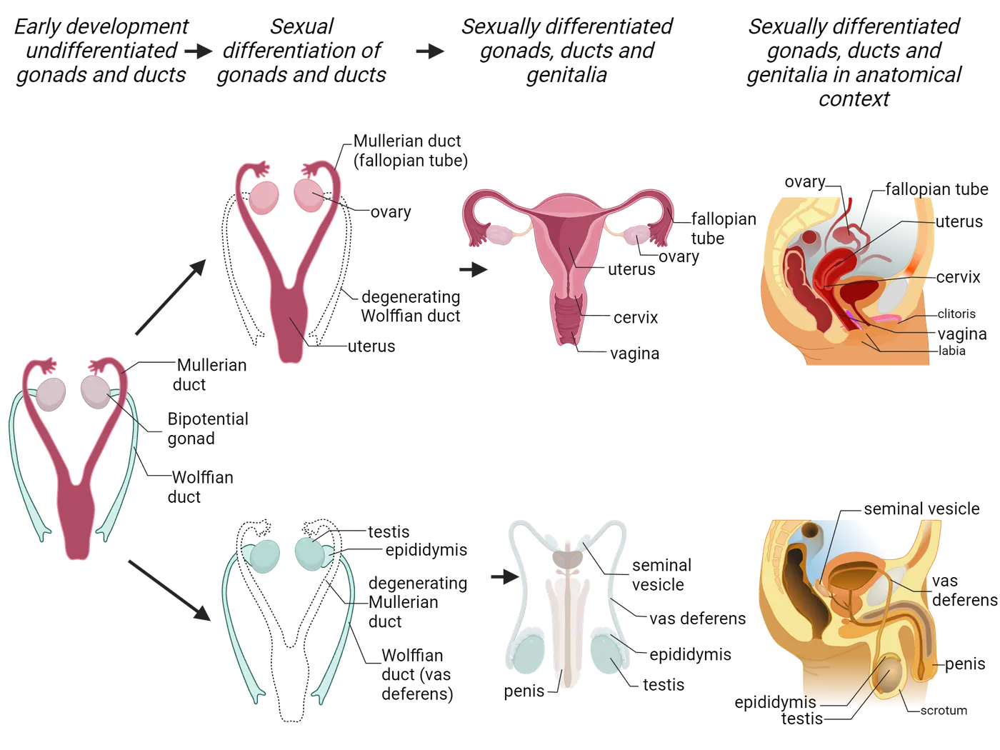
In contrast, embryos inheriting a copy of the X chromosome from their male parent will develop into XX individuals. Because in XX individuals SRY is not present, no androgens or anti-Müllerian hormones will be secreted, and the bipotential gonads, as well as the internal ducts, will follow a developmental pathway towards female differentiation. Gonadal somatic cells differentiate into granulosa cells instead of Sertoli cells, and theca cells instead of Leydig cells and the Müllerian duct will develop into female internal genitalia such as the uterus, fallopian tubes, and the internal portion of the vagina. The basic anatomy of these changes in the ducts with differentiation into a female phenotype is shown on top of Wolffian and Müllerian duct system development. While the granulosa and theca cells do not secrete hormones during early development, they will secrete two key hormones starting in adolescence: estrogen and progesterone, respectively.
While the XY system is the most common genetic sex determination structure in mammals, most birds and reptiles utilize a different sex chromosome system. In these groups, the heterogametic sex is the female, which carries one Z chromosome and one W chromosome, while males carry two Z chromosomes. Thus, in this system, the female parent determines the sex of the offspring by passing on either a Z or a W chromosome, which will result in the embryo developing into a male or a female, respectively (Ezaz et al. 2006).
However, things can get a bit more complicated: in some animals, such as the African pygmy mice (Mus minutoides) (Baudat, de Massy, and Veyrunes 2019) and some cichlid fishes (like M. pyrsonotus) (Ser, Roberts, and Kocher 2010), sex is determined by multiple genetic factors scattered across the genome, a process known as polygenic sex determination (Moore and Roberts 2013). This means that several genetic elements, not just one chromosome, collectively influence the sexual development of these organisms. Take the African pygmy mice as an example. Besides the usual X and Y chromosomes, these mice have a unique feminizing X chromosome variant referred to as X*. This variant can override the Y chromosome, resulting in different types of females. Specifically, in this species, there is only one type of male (XY), but three types of females: XX, XX*, and X*Y. In such a system, one might expect that litters would end up with significantly more female pups than males, right? Intriguingly, this is not the case. Research shows that male mice transmit a Y chromosome 80% of the time when mating with XX females, but only 36% of the time when mating with X*Y females. This suggests that males are selectively 'saving' their Y chromosomes for mates with at least one regular X chromosome, thereby ensuring a higher proportion of XY male offspring (Saunders et al. 2022).
This is just one example of the many diverse mechanisms involved in sex determination across species. As we will see in the next section, some species' sex determination is not influenced by genetic factors at all!
Environmental Sex Determination
In many animals, the switch to develop into a female or male is not solely determined by genes. Instead, sex determination relies on external stimuli to control this process. One of the most widespread mechanisms, found among crocodiles, most turtles, and some lizards, is temperature-dependent sex determination. This process relies on the environmental temperature during egg incubation, which in turn guides gene expression —many of which are the same genes driven by the Sry gene in mammals—driving the development of males or females (Yatsu et al. 2016). For example, in the American alligator (Alligator mississippiensis), eggs incubated at a constant temperature of 30°C (86°F) result in 100% female hatchlings, while incubation at higher temperatures, 34°C (93°F) or above, results in 100% male hatchlings (Ferguson and Joanen 1982) (Temperature-dependent sex example). Recent artificial incubation experiments have revealed an adaptive benefit to this mechanism. Researchers found that hatchlings incubated at male-promoting temperatures have higher survival rates compared to those incubated at female-promoting temperatures (Bock et al. 2023). Since male alligators reach sexual maturity much later than females, these findings suggest an evolutionary advantage: favoring females in conditions of lower survival ensures that some will reproduce in time, while favoring males in higher survival conditions ensures more males live long enough to reproduce. Fascinating!
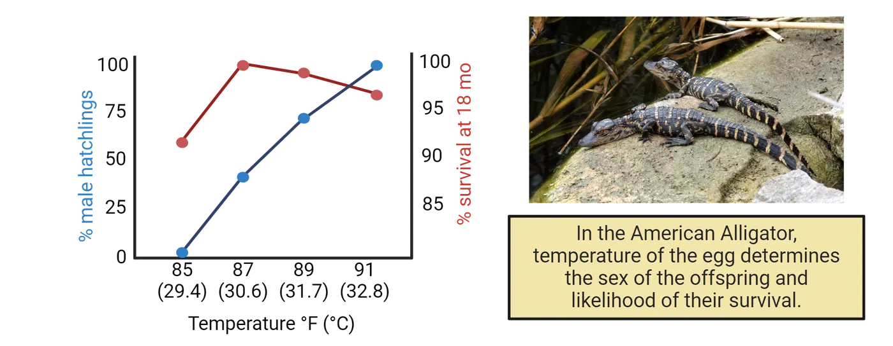
Temperature, however, is not the only environmental factor influencing sex determination. For instance, in the amphipod Echinogammarus marinus, the photoperiod (the length of day and night) influences their sex determination, with more males developing over a long-day photoperiod regime (usually spring and early summer) and more females developing over a short-day photoperiod regime (Guler et al. 2012) (late summer and fall). Additionally, social factors can determine sex in many coral-reef-dwelling fish and limpets. For example, in the coral–dwelling fish Gobiodon erythrospilus, contact with a potential mating partner determines both the timing of maturation and the sex of a maturing individual, with juveniles maturing into the sex opposite to that of the adult partner (Hobbs, Munday, and Jones 2004).
The remarkable diversity of sex determination mechanisms extends beyond early development into the adult stages of some species, particularly among fish. An extraordinary example of this is sequential hermaphroditism, where adult animals have the ability to switch sexes. This adaptation can take two main forms: protandry, where individuals initially mature as males and later transform into females, and protogyny, where they start as females and later become males. Take, for instance, the clownfish (Amphiprion percula), which are protandrous. These fish typically live in social groups consisting of a dominant female, always the largest in size, surrounded by a large male (which will breed with the female) and several smaller, non-breeding males. In this fascinating social structure, if the dominant female is removed or dies, the breeding male changes sex to become female. Concurrently, the next largest male in the hierarchy grows rapidly, taking over as the new breeding male. Now consider the clownfish featured in Disney's 'Finding Nemo’. Had the movie reflected actual clownfish behavior, Nemo’s plot would diverge sharply from the familiar storyline: following the death of his mate, Marlin would have transformed into a female, and Nemo, growing up, would likely have taken his place as the new breeding male.
But there are even more extreme examples. The Okinawa rubble gobiid fish (Trimma okinawae) has a mating system in which the social group consists of one dominant male who mates with multiple females, typically referred to as a harem. Removal of the dominant male from the harem results in female-to-male sex change by the largest female within just five days, but, if the dominant male is returned to the harem, the fish that underwent the sex change transforms back into a female (Manabe et al. 2007). Thus, this species is capable of bidirectional sex change within the lifetime of a single individual!
As you can appreciate now, there is immense variety across species in the mechanisms underlying sex determination. Understanding and embracing this variety can greatly enrich our understanding of the biology of sex, demonstrating that the widespread notion of a purely dichotomous male vs. female division in nature is overly simplistic and not reflective of the true biological diversity.
Having explored the diverse genetic and environmental factors that influence sex determination, we can now turn our attention to the next stage of development: sexual differentiation. This phase involves the specific processes through which the predetermined sex develops distinct biological and physiological characteristics. In the next section, we will learn that hormones play a pivotal role in this process through organizational and activational mechanisms, each contributing uniquely to the development and functioning of sexual characteristics.
Role of Hormones in Sexual Differentiation: Organizational vs Activational Mechanisms
We have already examined how the presence of specific sex chromosomes (XX in females and XY in males) or environmental cues leads to the development of an individual as male or female. This process initiates the differentiation of the bipotential gonads into either testes in males or ovaries in females. Following this differentiation, the gonads start to produce hormones in a sex-specific manner, which then triggers a cascade of events affecting not only the gonads themselves but also various other tissues and organs throughout the body. The key hormones involved are androgens and estrogens, which belong to a class of hormones known as steroid hormones. These hormones are derived from cholesterol and are notable for their fat-soluble properties, allowing them to easily penetrate cell membranes.
Before we dive deeper into how hormones from the gonads drive sex differences, it is important to mention that research in the past two decades has shown that many sex differences throughout tissues in the body, including the brain, are a result of the inherent differences between the X and Y chromosomes, independent of hormones. For example, in tammar wallabies, researchers have found that some sexual differences in body tissues appear many days before there is any visible development of the testes, suggesting that these differences are independent of testes-derived testosterone (Renfree and Short 1988). This indicates that certain characteristics in the body can develop differently based simply on whether the cells contain two X chromosomes or one X and one Y chromosome, even before hormonal influences come into play. Similarly, mice that have been gonadectomized (surgically removing their gonads to eliminate the influence of endogenous hormones) and treated equally with exogenous testosterone, show differences in sexual behavior depending on the number of X chromosomes, indicating that chromosomes can influence sexually related behaviors independently of hormones (Bonthuis, Cox, and Rissman 2012).
Lastly, it is also important to know that while androgens and estrogens are typically referred to as male and female sex hormones, respectively, both hormones are important for various functions in both sexes, albeit to varying degrees. Testosterone, the most well-known androgen, is predominantly produced in the testes in males and in smaller quantities in the ovaries in females. Both sexes also produce testosterone in their adrenal glands. Meanwhile, estrogens are mainly produced in the ovaries in females and, to a lesser extent, in the testes and adrenal glands in males. In females, estrogens are essential for the development and maintenance of reproductive tissues such as the breasts and uterus and play a crucial role in the estrous cycle and overall reproductive health. Additionally, both androgens and estrogens contribute significantly to other physiological processes, including bone density, muscle mass, and even mood regulation, underscoring their broad and critical impact on health.
Now we are ready to explore how androgens and estrogens contribute to sexual differentiation! These hormones influence development through two main mechanisms: organizational and activational effects.
Organizational Mechanisms of Sex Hormones
The organizational effects of androgens and estrogens are crucial for sexual differentiation, exerting their influence primarily during sensitive developmental stages such as embryogenesis and puberty. These hormonal effects lead to the permanent organization of neural and anatomical structures essential for sex-specific physiological functions and behaviors.
The initial organizational effects begin with the differential secretion of steroid hormones by the developing gonads during the prenatal period. In males, the testes begin to produce high levels of androgens during the fetal and early neonatal periods, significantly influencing sexual differentiation. In contrast, female gonads remain relatively quiescent, not producing substantial hormone levels until puberty (Organizational effects of gonadal testosterone in rodents). During these critical early stages, tissues exhibit heightened sensitivity to circulating androgens, which drive the "permanent" masculinization of various structures. For example, testosterone secreted by fetal Leydig cells in males triggers the development of male external genitalia, such as the penis and scrotum. Conversely, in females, the absence of significant testosterone levels allows the external genitalia to develop along a female typical trajectory, resulting in the formation of structures like the clitoris and labia. These developmental changes are considered permanent because they establish stable anatomical features that are maintained throughout life without the need for ongoing hormonal influence.
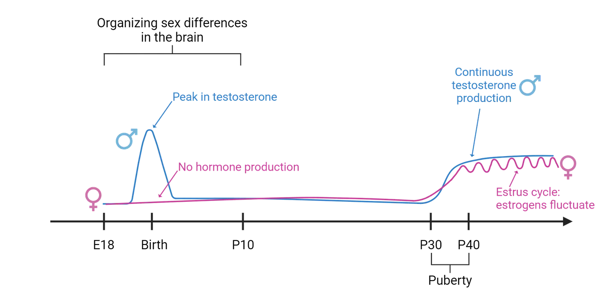
The organizational effects of hormones during critical developmental periods significantly influence not only the reproductive organs but also extend to the phenotypic differentiation of non-gonadal tissues, including the brain. In the brain, the influence of androgens during these sensitive periods does not typically manifest as major anatomical differences; instead, these hormones "prime" neural tissues to respond to androgens later in life (in other words, the organizational effects establish a framework within which androgens can later act, ensuring that sex-specific behaviors and functions are expressed appropriately). Take the preoptic area of the hypothalamus, a brain region involved in male copulatory behavior, as an example. In adult male rats, a subsection of the preoptic area called the sexually dimorphic nucleus (SDN-POA) is several-fold larger than in adult females. You can see an example of what this looks like in the left two photomicrographs of Organization hormones dictate SDN POA size.
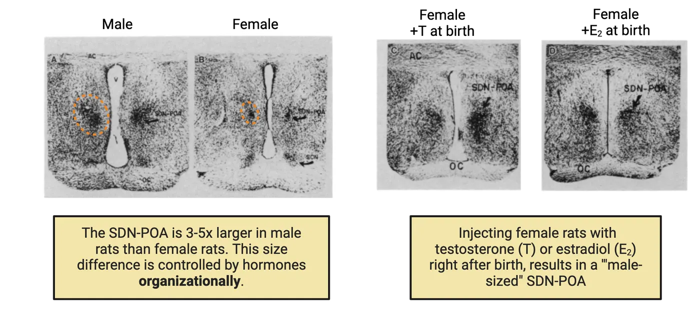
The patches of dark pigment on either side of the ventricle mark the cells of the SDN-POA of a male and a female rat. Treating female rats with testosterone just before and just after birth causes this nucleus to become as large as in normal males in adulthood, whereas removing testes (and testosterone) in male rats at birth causes the development of a smaller, feminine SDN-POA in adulthood (Döhler et al. 1984). A photomicrograph on the right side of Organization hormones dictate SDN POA size shows an example of the SDN-POA of a genetically female rat treated with testosterone at birth; it looks large like an intact male. In contrast, hormone manipulations in adulthood, after the period of naturally occurring neuronal death, have no effect on the volume of this nucleus (Gorski et al. 1978). Thus, the sexual differentiation of this nucleus resembles that of the genitalia—male hormones early in life permanently masculinize this brain region. One difference is that it is not testosterone itself but a metabolite of testosterone that masculinizes the SDN-POA. The enzyme aromatase, which is abundant in the hypothalamus, converts androgens (such as testosterone) into estrogens (such as estradiol). Estrogen then interacts with estrogen receptors, not androgen receptors, to induce a masculine SDN-POA. In fact, you can masculinize the SDN-POA by injecting females at birth with just estradiol, a potent estrogen hormone. You can see this effect on the far right of Organization hormones dictate SDN POA size.
Why doesn’t estrogen make all female brains masculinized then? Remember that while ovaries are present early on in females, they will not start secreting large amounts of estrogens until puberty (Organizational effects of gonadal testosterone in rodents). This means that estrogens are low in females around birth. The testes of males, in contrast, make plenty of steroid hormones, testosterone specifically, around birth. This peak in testosterone production drives many masculinization processes in the body and brain. In places like the hypothalamus, aromatase converts that testosterone to estrogen and drives masculinization of neural regions.
Similarly, in zebra finches (Poephila guttata), a species of songbirds where males sing more than females, the forebrain regions controlling song, including the higher vocal center (HVC) and the nucleus robustus archistriatum (RA), are larger in males. Treatment of newly hatched female zebra finches with estrogen, followed by testosterone treatment in adulthood, masculinizes the females in terms of both singing and the volume of RA and HVC (Gurney 1981). In contrast, castration of adult male finches reduces singing only modestly, and testosterone treatment of adult females cannot induce them to sing nor their brain regions to grow (A. P. Arnold 1975), suggesting that hormone influences during early developmental stages permanently masculinize the zebra finch brain. However, something very interesting was observed in zebra finches that did not fit what was observed in rats: neither early-life castration nor pharmacological blockade of steroid hormone receptors prevents these nuclei from developing a masculine phenotype in genetic males (A. P. Arnold 1996). Remember what we talked about the genotype itself causing sex differences independent of gonadal hormones? It turns out that the male genotype causes the zebra finch brain to locally produce steroid hormones, which then masculinize the birdsong system (Holloway and Clayton 2001). Sexually dimorphic RA/HVC size in zebra finches summarizes these different treatments and outcomes. This highlights, once again, the complex interplay between genetic and hormonal factors in the development of sex-specific behaviors.
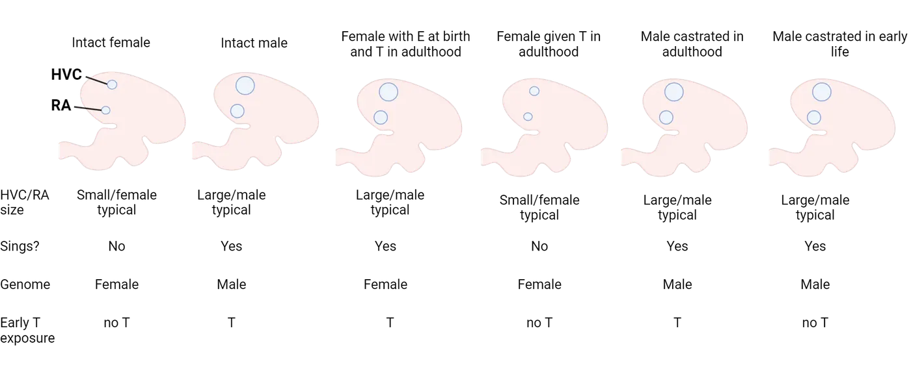
Activational Mechanisms
Activational effects of hormones occur after the initial organizational phase and are pivotal during adulthood, continuing to influence the body throughout an individual's life. These effects are triggered by the fluctuation of hormone levels, particularly during puberty, adulthood, and into old age. Unlike organizational effects, which are permanent and shape developmental pathways, activational effects are reversible and depend on the presence of hormones at any given time.
Let’s explore what happens during puberty. During this critical phase, the hypothalamic-pituitary-gonadal axis is activated both in males and females, initiating the pulsatile secretion of gonadotropin-releasing hormone (GnRH) from the hypothalamus. This hormone stimulates the pituitary gland to release luteinizing hormone (LH) and follicle-stimulating hormone (FSH), collectively known as gonadotropins. These gonadotropins then promote the production of estrogens and progesterone in the ovaries for females, and testosterone in the testes for males (see HPG axis). Each of these hormones exerts activational effects across various tissues.
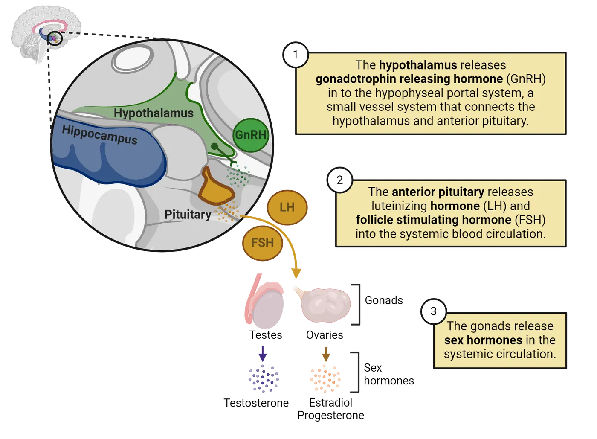
For example, in adult female mammals, the cyclic release of estrogen and progesterone by the ovaries during the estrous cycle has activational effects on the reproductive tract. Estrogen causes the uterine lining to thicken, preparing it for the potential implantation of an embryo. Progesterone, released after ovulation, further prepares the uterus for pregnancy and maintains the uterine lining. If pregnancy does not occur, the levels of these hormones drop, leading to the shedding of the uterine lining in menstruation. If we inject adult males with estrogen and progesterone, however, they will not undergo these changes. This example shows how activational mechanisms can dynamically regulate female physiology as long as the tissue has been previously organized to be female.
Just like organizational effects, activational mechanisms are not limited to the reproductive tract but also extend to other tissues, including the brain. For instance, the posterodorsal medial amygdala (MePD), a brain area that plays a crucial role in male sexual arousal triggered by olfactory cues in rodents, is about 1.5 times larger in males than in females. However, if testes are removed, the size of this nucleus can be completely feminized within 30 days, which is accompanied by a reduction in male arousal to airborne cues from receptive females. Conversely, administering testosterone to adult females for a month increases the MePD to a masculine size (Cooke, Tabibnia, and Breedlove 1999). This shows that androgens play an activational role in affecting the size of MePD.
In sum, both genetic and hormonal factors play key roles in shaping sex-specific physiological processes and behaviors, but it is important to recognize that the social and physical environment also exerts profound effects, especially in humans. From birth, human infants are immersed in a highly gendered social and physical environment. Boys and girls are often expected and encouraged to behave differently and tend to choose different occupations and life paths. These choices lead to variations in physical and emotional stress, diet, and numerous other factors (Arthur P. Arnold 2017). The substantial differences in environmental experiences between the sexes can contribute to functional differences in the brain and other tissues, as well as susceptibility to diseases.
Summary
In this section, we embarked on a fascinating journey to understand the complex mechanisms that determine whether an individual develops as male or female. We began by exploring how, in many species, the presence of specific genes located on sex chromosomes (X and Y in the case of humans) initiates a series of events that lead to the development of male or female gonads. However, we also learned that in many other species, sex determination is not driven by genetics but by environmental factors. For example, we learned that temperature can dictate sex in certain reptiles, and that some species of fish can even change their sex based on social dynamics. Lastly, we delved into the world of steroid hormones and discovered how these powerful chemicals, secreted by male and female gonads, differentially shape the early development of tissues throughout the body, including the brain, and how these hormones further continue to influence the physiology of tissues throughout an individual's lifespan.
Key terms
Sex determination, gonads, gametes, sex chromosomes, SRY gene, testosterone, estrogen, sexual differentiation, testes, ovaries steroid hormones, organizational, activationalReferences
Arnold, A. P. (1975). The effects of castration and androgen replacement on song, courtship, and aggression in zebra finches (Poephila guttata). The Journal of Experimental Zoology, 191(3), 309–326. https://doi.org/10.1002/jez.1401910302.
Arnold, A. P. (2017). A general theory of sexual differentiation. Journal of Neuroscience Research, 95(1–2), 291–300. https://doi.org/10.1002/jnr.23884.
Baudat, F., de Massy, B., & Veyrunes, F. (2019). Sex chromosome quadrivalents in oocytes of the African pygmy mouse Mus minutoides that harbors non-conventional sex chromosomes. Chromosoma, 128(3), 397–411. https://doi.org/10.1007/s00412-019-00699-4.
Bock, S. L., Loera, Y., Johnson, J. M., Smaga, C. R., Haskins, D. L., Tuberville, T. D., Singh, R., Rainwater, T. R., Wilkinson, P. M., & Parrott, B. B. (2023). Differential early-life survival underlies the adaptive significance of temperature-dependent sex determination in a long-lived reptile. Functional Ecology, 37(11), 2895–2909. https://doi.org/10.1111/1365-2435.14420.
Bonthuis, P. J., Cox, K. H., & Rissman, E. F. (2012). X-chromosome dosage affects male sexual behavior. Hormones and Behavior, 61(4), 565–572. https://doi.org/10.1016/j.yhbeh.2012.02.003.
Cooke, B. M., Tabibnia, G., & Breedlove, S. M. (1999). A brain sexual dimorphism controlled by adult circulating androgens. Proceedings of the National Academy of Sciences of the United States of America, 96(13), 7538–7540. https://doi.org/10.1073/pnas.96.13.7538.
Döhler, K. D., Coquelin, A., Davis, F., Hines, M., Shryne, J. E., & Gorski, R. A. (1984). Pre- and postnatal influence of testosterone propionate and diethylstilbestrol on differentiation of the sexually dimorphic nucleus of the preoptic area in male and female rats. Brain Research, 302(2), 291–295. https://doi.org/10.1016/0006-8993(84)90242-7.
Ezaz, T., Stiglec, R., Veyrunes, F., & Marshall Graves, J. A. (2006). Relationships between vertebrate ZW and XY sex chromosome systems. Current Biology, 16(17), R736–R743. https://doi.org/10.1016/j.cub.2006.08.021.
Ferguson, M. W. J., & Joanen, T. (1982). Temperature of egg incubation determines sex in Alligator mississippiensis. Nature, 296(5860), 850–853. https://doi.org/10.1038/296850a0.
Gorski, R. A., Gordon, J. H., Shryne, J. E., & Southam, A. M. (1978). Evidence for a morphological sex difference within the medial preoptic area of the rat brain. Brain Research, 148(2), 333–346. https://doi.org/10.1016/0006-8993(78)90723-0.
Guler, Y., Short, S., Kile, P., & Ford, A. T. (2012). Integrating field and laboratory evidence for environmental sex determination in the amphipod, Echinogammarus marinus. Marine Biology, 159(12), 2885–2890. https://doi.org/10.1007/s00227-012-2042-2.
Gurney, M. E. (1981). Hormonal control of cell form and number in the zebra finch song system. The Journal of Neuroscience: The Official Journal of the Society for Neuroscience, 1(6), 658–673. https://doi.org/10.1523/JNEUROSCI.01-06-00658.1981.
Hobbs, J. A., Munday, P. L., & Jones, G. P. (2004). Social induction of maturation and sex determination in a coral reef fish. Proceedings of the Royal Society of London. Series B: Biological Sciences, 271(1553), 2109–2114. https://doi.org/10.1098/rspb.2004.2845.
Holloway, C. C., & Clayton, D. F. (2001). Estrogen synthesis in the male brain triggers development of the avian song control pathway in vitro. Nature Neuroscience, 4(2), 170–175. https://doi.org/10.1038/84001.
Kashimada, K., & Koopman, P. (2010). Sry: The master switch in mammalian sex determination. Development, 137(23), 3921–3930. https://doi.org/10.1242/dev.048983.
Manabe, H., Ishimura, M., Shinomiya, A., & Sunobe, T. (2007). Field evidence for bi-directional sex change in the polygynous gobiid fish Trimma okinawae. Journal of Fish Biology, 70(2), 600–609. https://doi.org/10.1111/j.1095-8649.2007.01338.x.
Moore, E. C., & Roberts, R. B. (2013). Polygenic sex determination. Current Biology: CB, 23(12), R510–R512. https://doi.org/10.1016/j.cub.2013.04.004.
Nagahama, Y., Chakraborty, T., Paul-Prasanth, B., Ohta, K., & Nakamura, M. (2021). Sex determination, gonadal sex differentiation, and plasticity in vertebrate species. Physiological Reviews, 101(3), 1237–1308. https://doi.org/10.1152/physrev.00044.2019.
Nottebohm, F. (1980). Testosterone triggers growth of brain vocal control nuclei in adult female canaries. Brain Research, 189(2), 429–436. https://doi.org/10.1016/0006-8993(80)90102-X.
Renfree, M. B., & Short, R. V. (1988). Sex determination in marsupials: Evidence for a marsupial-eutherian dichotomy. Philosophical Transactions of the Royal Society of London. Series B, Biological Sciences, 322(1208), 41–53. https://doi.org/10.1098/rstb.1988.0112.
Saunders, P. A., Perez, J., Ronce, O., & Veyrunes, F. (2022). Multiple sex chromosome drivers in a mammal with three sex chromosomes. Current Biology, 32(9), 2001–2010.e3. https://doi.org/10.1016/j.cub.2022.03.029.
Ser, J. R., Roberts, R. B., & Kocher, T. D. (2010). Multiple interacting loci control sex determination in Lake Malawi cichlid fishes. Evolution; International Journal of Organic Evolution, 64(2), 486–501. https://doi.org/10.1111/j.1558-5646.2009.00871.x.
Yatsu, R., Miyagawa, S., Kohno, S., Parrott, B. B., Yamaguchi, K., Ogino, Y., Miyakawa, H., et al. (2016). RNA-seq analysis of the gonadal transcriptome during Alligator mississippiensis temperature-dependent sex determination and differentiation. BMC Genomics, 17(1), 77. https://doi.org/10.1186/s12864-016-2396-9.
Zucker, I., Prendergast, B. J., & Beery, A. K. (2022). Pervasive neglect of sex differences in biomedical research. Cold Spring Harbor Perspectives in Biology, 14(4), a039156. https://doi.org/10.1101/cshperspect.a039156.
Practice The multiple-choice and fill-in-the-blank questions for this section are interactive and live on OpenStax, so they are not carried here: open the book on openstax.org.
11.3Sex Differences in Brain and Behavior: Genetic, Hormonal, and Environmental Mechanisms
By the end of this section, you should be able to
- Explain how sex chromosome-linked genes can directly influence brain function
- Understand the mechanisms through which steroid hormones can affect cellular functions, including both classical and rapid signaling pathways
- Identify how social and physical environments influence hormonal actions and lead to variations in brain development and behavior
In the previous section, we explored the biological mechanisms of sex determination, highlighting the diverse genetic and environmental factors involved across various species. We also examined how gonadal hormones drive sex differentiation in various tissues, including specific brain regions like the preoptic area of the hypothalamus in rats, which controls male copulatory behavior, and the higher vocal center in zebra finches, which is involved in male song production. However, as we discussed at the beginning of this chapter, sex differences in the brain and behavior extend far beyond those related to reproduction. For instance, there are notable sex differences in sensory perception, motivated behavior, and stress responses, which can influence the susceptibility to psychological disorders. But how do these differences arise?
In this section, we will investigate the mechanisms through which sex chromosome-linked genes, hormones, and the environment contribute to sex differences in the brain. This foundational understanding will prepare us for the final section, where we will delve into how sex differences in neuronal circuits and glial functions can lead to sex-biased susceptibility to psychiatric diseases.
Contribution of Sex Chromosomes to Sex Differences in the Brain
We have previously examined how sex chromosomes influence sex differences by determining gonadal development and synthesis of steroid hormones such as testosterone and estrogen. We also touched upon the fact that in mammalian cells, the XY or XX chromosomal complement alone can drive sex-specific cellular physiology. This process applies to the brain as well.
For example, a group of researchers found that in male rats, Sry is highly expressed in brain areas with an abundance of dopamine-producing neurons, such as the substantia nigra and the ventral tegmental area. As you may recall, SRY is the protein encoded by the Y chromosome-linked Sry gene, which was primarily known as the key orchestrator of male sexual determination by acting within the gonadal tissue, so this finding was quite surprising. Interestingly, the researchers further discovered that inhibiting SRY expression—by directly injecting compounds that prevent the synthesis of the SRY protein—led to a decrease in tyrosine hydroxylase levels, an enzyme critical for the production of dopamine. Dopamine is crucial for motor movement, so this inhibition also resulted in motor deficits (Dewing et al. 2006). These results suggest that the production of dopamine in certain neurons is distinctly regulated in males versus females simply by the presence of the Y chromosome in males, without any mediation by gonadal hormones. Remarkably, this group recently discovered that overexpression of SRY in dopamine neurons may explain the male-biased predisposition to Parkinson's disease, a disorder characterized by motor dysfunction due to the degeneration of dopamine-producing neurons in the substantia nigra (Lee et al. 2019) (see Introduction).
But Sry is not the only gene affecting brain cells in a sex-specific way. As an example, it was recently found that genes linked to the X chromosome are extensively expressed in the brain, where they modulate brain anatomy, connectivity, and functionality. Indeed, the X chromosome in mice and humans express more brain-specific genes than any other chromosome (Nguyen and Disteche 2006)! But there is a problem: the difference in the number of X chromosomes between XX and XY mammals presents an inequity in gene dose between the sexes. That is, XY animals have half as much X genetic material as XX individuals. Generally in cell biology, having too many or two few of any chromosome is detrimental to cellular function. So how do cells adapt to potentially having one or two Xs depending on their genetic sex? In most mammalian cells, this dose problem is solved by inactivating one of the Xs in XX carrying cells. X-inactivation depicts this process, in which one X chromosome is condensed in a largely random fashion. With one X inactivated in XX cells, both XX and XY genotypes have one chromosome-worth of X material “available”, and their cellular physiology is setup to work well with that level of X gene expression. This is important because now we know that some of the functions associated with the X chromosome are affected by dosage—i.e., the number of “available” X chromosomes present. But how did scientist learn about this dosage effect if both XX and XY genotypes technically have the same number of functional X chromosomes?

First, studies of human aneuploidies provided insights. Examples of these conditions include Klinefelter syndrome (XXY), where males have an extra X chromosome, and Turner syndrome (XO), where females have only one X chromosome. These syndromes illustrate the effects of abnormal sex chromosome numbers on development and physiology. For instance, individuals with Klinefelter syndrome often exhibit reduced muscle mass, decreased bone density, and brain function abnormalities, including cognitive abnormalities and exacerbated responses to motor and auditory stimuli(Wallentin et al. 2016). Those with Turner syndrome may experience short stature, heart defects, and reduced hippocampal volumes, a brain structure critical for memory formation (Kesler et al. 2004). However, people with Klinefelter and Turner syndrome also show abnormal gonadal function and secretion of steroid hormones, making it impossible to separate the effects of the differences in X chromosomes from the effects of hormones. To solve that issue, experimental mouse models of aneuploidies, where there are differences in X chromosomes but the gonads are intact, were developed, offering significant clues about the importance of proper X chromosome dosing. For example, a series of studies using high-resolution brain imaging to compare male mice with two X chromosomes (XXY) and females with only one X chromosome (XO) to their wild-type XY and XX littermates, respectively, found that both XXY and XO show anatomical changes across the brain. Intriguingly, many of the brain areas affected show changes in both XXY vs. XY and XO vs. XX comparisons, but in opposite ways (Raznahan et al. 2015; 2013). This suggests that the dosage of X chromosomes determines anatomical characteristics in a subset of brain areas. But why is this important if we discussed that XY and XX individuals have the same amount of functional X chromosomes?
Well, it turns out that while it is true that one X chromosome in XX individuals is typically 'inactivated', some genes on the X chromosome have been shown to escape inactivation (Berletch et al. 2011). This means that there could still be an imbalance in the expression of X-linked genes in males versus females, leading to important differences between XX and XY individuals in neuronal and glial function throughout the brain, a fascinating area of study that will surely expand in the coming years.
Contribution of Sex Hormones to Sex Differences in the Brain
While sex chromosome effects on brain function are an exciting and developing field, we have a much deeper understanding of the many ways that sex hormones shape the brain. In Mechanisms of Sexual Determination and Differentiation, we categorized the effects of hormones into organizational versus activational effects based on when hormones have their effects and how long they last. A separate dimension to steroid hormone function that we must now consider as we delve more into how sex hormones impact brain cells is how sex hormones signal to cells. Specifically, steroid hormones can exert their effects on cells through two main mechanisms that become important to appreciate in the brain: the classical and rapid signaling mechanisms.
The Classical Mechanism.
Classic steroid hormone receptor signaling shows a diagram of the classical steroid hormone signaling mechanism.
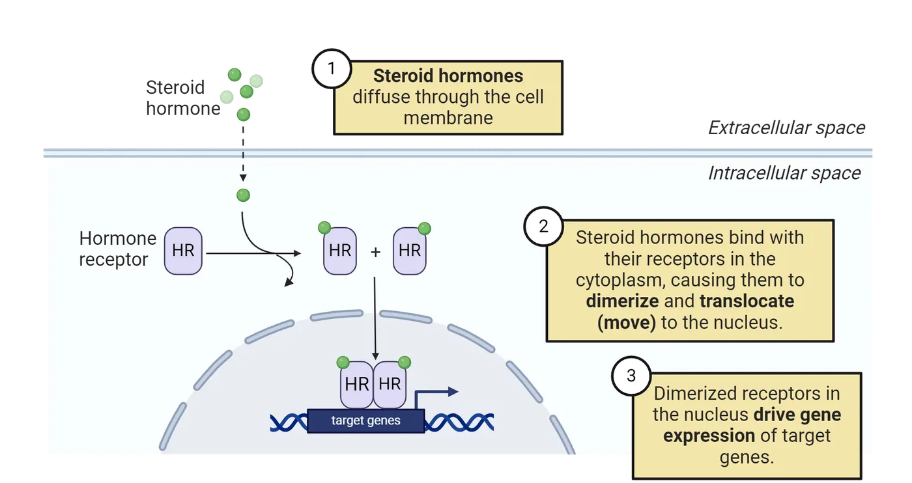
In this mechanism, steroid hormones like estrogen and testosterone, which remember, are fat-soluble, which make it easy for them to slip-through the lipid bilayer in membranes, enter the cell (step 1) and bind to specific receptors in the cytoplasm (step 2). Once bound, these hormone-receptor complexes form pairs and move into the nucleus of the cell (step 2). Inside the nucleus, they act as transcription factors, meaning they can regulate gene expression by binding to specific DNA sequences (step 3). This genomic action is slow, taking hours to days, and can lead to long-term changes in neuronal structure and function. Many of the organizational effects of hormones are achieved via this mechanism. For example, the neonatal surge of testosterone in male mice results in larger volumes of the posterior bed nucleus of the stria terminalis (BNSTp) compared to females, a brain area associated with stress responses and social behaviors. But how does this happen?
As we first learned in Mechanisms of Sexual Determination and Differentiation, many of the effects of the neonatal surge of testosterone within the brain involve the conversion of testosterone to estradiol by an enzyme called aromatase. This estradiol then acts through a type of estrogen receptor called estrogen receptor alpha (ERα), which functions as a transcription factor—a protein that binds to specific DNA sequences to regulate the expression of certain genes. In the case of the BNSTp in mice, ERα initiates a gene expression program during early life that promotes neuronal survival (Gegenhuber et al. 2022), an organizational effect resulting in males’ BNSTp having more neurons than females’. But this is not exclusive to organizational effects, as activational actions of hormones can also rely on this mechanism.
The Rapid Signaling Mechanism
Rapid steroid hormone receptor signaling shows a diagram of the rapid steroid hormone signaling mechanism.
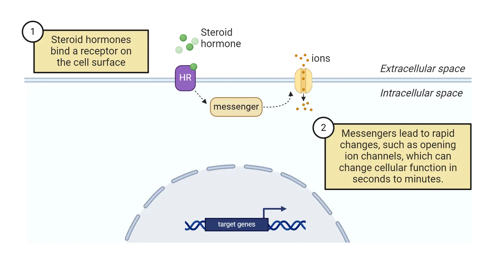
In this mechanism, steroid hormones bind to receptors located on the cell membrane rather than inside the cell (step 1). These membrane-bound receptors trigger immediate signaling pathways without directly altering gene activity (step 2). Using this mechanism, steroid hormones can modulate neuronal functions within seconds to minutes. This is crucial because steroid hormone levels fluctuate periodically—for example, testosterone tends to be higher in males during earlier times of the day, and ovarian hormones in females change throughout the estrous cycle (Gonadal steroid hormone fluctiations)—as well as in response to environmental stimuli. For example, winning an aggressive encounter can rapidly increase testosterone levels in males and progesterone levels in females, which in turn could rapidly modulate neuronal functions. Rapid activation of cells by membrane steroid hormone receptors allows cells to respond to these kinds of transient changes in hormone levels rapidly. The classical mechanism simply takes too long to be a reasonable readout of such fluctuations.
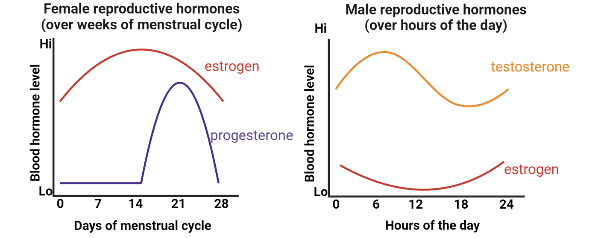
A notable example of rapid steroid hormone effects driving sexually dimorphic changes in neurons is the modulation of synaptic plasticity. Within the hippocampus, a subtype of neurons in the CA1 subregion exhibits rapid and reversible changes in synaptogenesis—the formation of new synapses—in response to ovarian hormones. This rapid modulation involves membrane-bound estrogen receptors activating intracellular signaling pathways that quickly alter neuronal activity and synaptic strength. This change has been best studied in rodents, particularly rats. The female rat shows an estrous cycle that lasts ~4 days, the rat equivalent of a human menstrual cycle. The cyclical changes in circulating ovarian hormones in the female rat estrous cycle result in increases in spine density during proestrus, when ovarian steroid levels are highest, and subsequent decreases in later stages of the estrous cycle (e.g., diestrus or metestrus, when estrogen and progesterone levels are relatively low) (McEwen et al. 2012). Dendritic spines vary with estrogen level shows an example of what these differences look like in a mouse expressing a green fluorescent protein in neurons within the hippocampus (specifically, CA1) to help us see the spines.
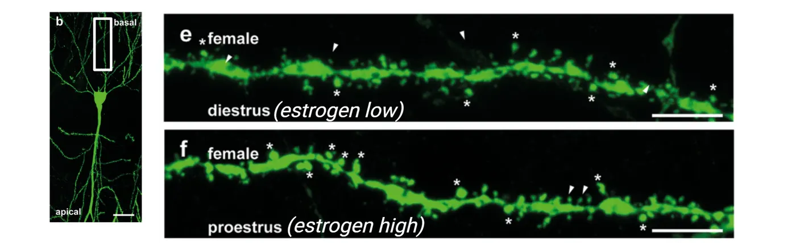
The white *s mark spines in this image. It is important to mention, however, that some of these changes in spines might also be a result of classic actions of steroids (Sandstrom and Williams 2001). This change in spine density with estrus cycle, in turn, could have consequences on behavior. For example, some studies have found that female rodents show better performance in memory tasks during proestrus compared to diestrus or metestrus (Koss and Frick 2017), and others found that a single post-training treatment with estrogen administered immediately after training enhances memory consolidation in ovariectomized rodents (Frick and Kim 2018).
Similarly, an increase in circulating testosterone in male humans was shown to heighten the reactivity of the amygdala, hypothalamus, and periaqueductal gray to angry facial expressions within 90 minutes of testosterone administration (Goetz et al. 2014), suggesting that testosterone can quickly modify the function of neural circuits mediating threat processing and aggressive behavior via rapid non-genomic mechanisms.
Contribution of Environmental Factors to Sex differences in the Brain
Environmental factors also play a significant role in shaping sex differences in the brain, especially during early developmental periods. For example, social stressors, which can profoundly affect hormonal factors contributing to sex differences (see Introduction), can also result in long-lasting effects on brain circuits. Interestingly, sometimes the same stressor can either eliminate or exacerbate sex differences in brain physiology depending on the context. For instance, males and females show sex differences in gene expression in brain areas associated with reward both at baseline and after exposure to cocaine. A recent study found that exposure to social isolation stress eliminates the sex differences seen at baseline (i.e., it makes male and female reward brain regions more similar to each other when animals have not been exposed to cocaine), but it actually exacerbates the differences in response to cocaine (Walker et al. 2022). This finding sheds light on how different responses to stressors in males versus females can contribute to the sex differences seen in addiction-related behaviors.
Similarly, physical activity can affect cognitive functions in sex-specific ways. A meta-analysis assessing the effects of exercise efficacy to improve cognition in elderly humans found that exercise interventions were associated with larger effect sizes in studies comprised of a higher percentage of women compared to studies with a lower percentage of women, suggesting that elderly women’s executive processes may benefit more from exercise than elderly men's (Barha, Davis, et al. 2017). Studies in rodents have also found sex-specific effects of exercise on brain function.
The effects of environmental factors in contributing to sex-specific responses further extend to how males and females respond to exposure to contaminants, an increasingly emerging concern considering that the rate of production and use of new chemicals is constantly increasing.
As an example of a particularly well known endocrine-disrupting chemical, let’s discuss perinatal exposure to PCBs. PCBs are chemicals used for their coolant properties in products such as transformers, capacitors, electrical devices, and appliances. PCBs can directly and irreversibly affect sexual differentiation of the brain. For example, a study that exposed pregnant rats to PCBs found that perinatal exposure led to changes in the hypothalamus that altered the female onset of puberty and estrous cyclicity (the regular, recurring changes in the female reproductive system to prepare them for pregnancy) (Dickerson et al. 2011). Although PCBs were banned in the late 1970s, they are still present in the environment due to their persistence and bioaccumulation. Aggravating the concern, studies keep finding deleterious effects of PCB exposure in humans. For example, a recent systematic review found that perinatal PCBs are associated with adverse cognitive development and attention issues in middle childhood, affecting boys to a greater extent than girls (Balalian et al. 2024). This is just one example that highlights the imperative need to conduct rigorous research and implement stringent regulation for all new chemicals before they become widespread and can potentially pose significant risks for human and animal health.
As you can appreciate, we are increasingly recognizing that the social, physical, and chemical environment, alongside genes and hormones, play a crucial role in shaping sex differences in the brain. In humans, this takes yet another level of complexity given that, from birth, human infants are immersed in a gendered world where boys and girls are often expected and encouraged to behave differently. These societal expectations lead them to pursue different occupations and life paths, resulting in variations in physical and emotional stress, diet, and other factors. Such substantial differences in environmental experiences between the sexes can further contribute to functional differences in the brain and other tissues, as well as differing susceptibility to diseases.
Summary
In this section, we explored how genes located on sex chromosomes, steroid hormones, and environmental factors contribute to sex differences in the brain. We learned that proteins encoded by sex chromosome-linked genes can directly affect the physiology of neurons and brain function. Additionally, we examined mouse models with variations in the number of X or Y chromosomes, where the function of the gonads remains intact. These models have shown that changes in the dosage of sex chromosomes can significantly contribute to sex differences in brain anatomy and function.
Further, we explored how steroid hormones can act through both genomic and non-genomic mechanisms to influence brain function. Genomic actions involve hormones like estradiol binding to intracellular receptors, such as estrogen receptor alpha (ERα), which then act as transcription factors to regulate gene expression. This process is typically slower and results in long-lasting changes in cell function. Non-genomic actions, on the other hand, involve rapid responses initiated by hormone-receptor interactions at the cell membrane, leading to quick changes in cell signaling pathways.
Lastly, we learned that environmental factors, including the physical and social environment, can play a significant role in contributing to brain sex differences. Importantly, we also discovered that exposure to various man-made chemicals can disrupt hormonal balance and brain development, underscoring the urgent need for comprehensive studies and stringent regulations to better understand and mitigate the impact of these environmental factors on brain development and overall health.
Key terms
Classical steroid hormone signaling mechanism, rapid steroid hormone signaling mechanism, environmental factors, PCBs, DNA methylation, histone modificationReferences
Balalian, A. A., Stingone, J. A., Kahn, L. G., Herbstman, J. B., Graeve, R. I., Stellman, S. D., & Factor-Litvak, P. (2024). Perinatal exposure to polychlorinated biphenyls (PCBs) and child neurodevelopment: A comprehensive systematic review of outcomes and methodological approaches. Environmental Research, 252(July), 118912. https://doi.org/10.1016/j.envres.2024.118912.
Barha, C. K., Davis, J. C., Falck, R. S., Nagamatsu, L. S., & Liu-Ambrose, T. (2017). Sex differences in exercise efficacy to improve cognition: A systematic review and meta-analysis of randomized controlled trials in older humans. Frontiers in Neuroendocrinology, 46(July), 71–85. https://doi.org/10.1016/j.yfrne.2017.04.002.
Barha, C. K., Falck, R. S., Davis, J. C., Nagamatsu, L. S., & Liu-Ambrose, T. (2017). Sex differences in aerobic exercise efficacy to improve cognition: A systematic review and meta-analysis of studies in older rodents. Frontiers in Neuroendocrinology, 46(July), 86–105. https://doi.org/10.1016/j.yfrne.2017.06.001.
Berletch, J. B., Yang, F., Xu, J., Carrel, L., & Disteche, C. M. (2011). Genes that escape from X inactivation. Human Genetics, 130(2), 237–245. https://doi.org/10.1007/s00439-011-1011-z.
Dewing, P., Chiang, C. W. K., Sinchak, K., Sim, H., Fernagut, P.-O., Kelly, S., Chesselet, M.-F., et al. (2006). Direct regulation of adult brain function by the male-specific factor SRY. Current Biology: CB, 16(4), 415–420. https://doi.org/10.1016/j.cub.2006.01.017.
Dickerson, S. M., Cunningham, S. L., Patisaul, H. B., Woller, M. J., & Gore, A. C. (2011). Endocrine disruption of brain sexual differentiation by developmental PCB exposure. Endocrinology, 152(2), 581–594. https://doi.org/10.1210/en.2010-1103.
Frick, K. M., & Kim, J. (2018). Mechanisms underlying the rapid effects of estradiol and progesterone on hippocampal memory consolidation in female rodents. Hormones and Behavior, 104(August), 100–110. https://doi.org/10.1016/j.yhbeh.2018.04.013.
Gegenhuber, B., Wu, M. V., Bronstein, R., & Tollkuhn, J. (2022). Gene regulation by gonadal hormone receptors underlies brain sex differences. Nature, 606(7912), 153–159. https://doi.org/10.1038/s41586-022-04686-1.
Goetz, S. M. M., Tang, L., Thomason, M. E., Diamond, M. P., Hariri, A. R., & Carré, J. M. (2014). Testosterone rapidly increases neural reactivity to threat in healthy men: A novel two-step pharmacological challenge paradigm. Biological Psychiatry, 76(4), 324–331. https://doi.org/10.1016/j.biopsych.2014.01.016.
Jašarević, E., Sieli, P. T., Twellman, E. E., Welsh, T. H., Schachtman, T. R., Roberts, R. M., Geary, D. C., & Rosenfeld, C. S. (2011). Disruption of adult expression of sexually selected traits by developmental exposure to bisphenol A. Proceedings of the National Academy of Sciences of the United States of America, 108(28), 11715–11720. https://doi.org/10.1073/pnas.1107958108.
Kesler, S. R., Garrett, A., Bender, B., Yankowitz, J., Zeng, S. M., & Reiss, A. L. (2004). Amygdala and hippocampal volumes in Turner syndrome: A high-resolution MRI study of X-monosomy. Neuropsychologia, 42(14), 1971–1978. https://doi.org/10.1016/j.neuropsychologia.2004.04.021.
Koss, W. A., & Frick, K. M. (2017). Sex differences in hippocampal function. Journal of Neuroscience Research, 95(1–2), 539–562. https://doi.org/10.1002/jnr.23864.
Lee, J., Pinares-Garcia, P., Loke, H., Ham, S., Vilain, E., & Harley, V. R. (2019). Sex-specific neuroprotection by inhibition of the Y-chromosome gene, SRY, in experimental Parkinson’s disease. Proceedings of the National Academy of Sciences, 116(33), 16577–16582. https://doi.org/10.1073/pnas.1900406116.
McCarthy, M. M., Auger, A. P., Bale, T. L., De Vries, G. J., Dunn, G. A., Forger, N. G., Murray, E. K., Nugent, B. M., Schwarz, J. M., & Wilson, M. E. (2009). The epigenetics of sex differences in the brain. The Journal of Neuroscience, 29(41), 12815–12823. https://doi.org/10.1523/JNEUROSCI.3331-09.2009.
McEwen, B. S., Akama, K. T., Spencer-Segal, J. L., Milner, T. A., & Waters, E. M. (2012). Estrogen effects on the brain: Actions beyond the hypothalamus via novel mechanisms. Behavioral Neuroscience, 126(1), 4–16. https://doi.org/10.1037/a0026708.
Nguyen, D. K., & Disteche, C. M. (2006). Dosage compensation of the active X chromosome in mammals. Nature Genetics, 38(1), 47–53. https://doi.org/10.1038/ng1705.
Nugent, B. M., Wright, C. L., Shetty, A. C., Hodes, G. E., Lenz, K. M., Mahurkar, A., Russo, S. J., Devine, S. E., & McCarthy, M. M. (2015). Brain feminization requires active repression of masculinization via DNA methylation. Nature Neuroscience, 18(5), 690–697. https://doi.org/10.1038/nn.3988.
Raznahan, A., Lue, Y., Probst, F., Greenstein, D., Giedd, J., Wang, C., Lerch, J., & Swerdloff, R. (2015). Triangulating the sexually dimorphic brain through high-resolution neuroimaging of murine sex chromosome aneuploidies. Brain Structure and Function, 220(6), 3581–3593. https://doi.org/10.1007/s00429-014-0875-9.
Raznahan, A., Probst, F., Palmert, M. R., Giedd, J. N., & Lerch, J. P. (2013). High resolution whole brain imaging of anatomical variation in XO, XX, and XY mice. NeuroImage, 83(December), 962–968. https://doi.org/10.1016/j.neuroimage.2013.07.052.
Sandstrom, N. J., & Williams, C. L. (2001). Memory retention is modulated by acute estradiol and progesterone replacement. Behavioral Neuroscience, 115(2), 384–393.
Walker, D. M., Zhou, X., Cunningham, A. M., Lipschultz, A. P., Ramakrishnan, A., Cates, H. M., Bagot, R. C., Shen, L., Zhang, B., & Nestler, E. J. (2022). Sex-specific transcriptional changes in response to adolescent social stress in the brain’s reward circuitry. Biological Psychiatry, 91(1), 118–128. https://doi.org/10.1016/j.biopsych.2021.02.964.
Wallentin, M., Skakkebæk, A., Bojesen, A., Fedder, J., Laurberg, P., Østergaard, J. R., Hertz, J. M., Pedersen, A. D., & Gravholt, C. H. (2016). Klinefelter syndrome has increased brain responses to auditory stimuli and motor output, but not to visual stimuli or Stroop adaptation. NeuroImage: Clinical, 11(February), 239–251. https://doi.org/10.1016/j.nicl.2016.02.002.
Practice The multiple-choice and fill-in-the-blank questions for this section are interactive and live on OpenStax, so they are not carried here: open the book on openstax.org.
11.4Sex Differences in Brain Circuits and Susceptibility to Psychiatric Disease
By the end of this section, you should be able to
- Describe sex differences in brain circuits underlying responses to stress as well as motivated and social behaviors, and how this can be affected by circulating steroid hormones.
- Explain how these neurobiological differences could contribute to sex-specific prevalence, symptoms, and treatment responses in psychological and psychiatric disorders.
- Discuss how, beyond neurons, there are immune cells in the brain which could also contribute to sex differences in brain functions as well as sex-specific susceptibilities to psychiatric diseases
In the last section, we learned about how sex chromosome-linked genes, hormones, and the environment can drive sex differences in the brain and behavior. But how do differences at the molecular level translate into differences in behavior? Here, we will explore current evidence showing sex differences in brain circuits that regulate stress, motivation, and social behaviors, along with their interaction with steroid hormones, and how these could contribute to sex differences in psychological and psychiatric diseases.
You may be wondering, what do we mean by sex differences in psychological and psychiatric diseases, and why is it important to understand the mechanisms driving them?
For decades, we have known that there are notable sex differences in the prevalence (i.e. how common a disease is within a population), presentation (i.e. the symptoms and behaviors that characterize a disease), and response to treatment (how effectively a treatment works) of psychiatric diseases. For example, major depressive disorders and anxiety disorders, including post-traumatic stress disorder and generalized anxiety disorder, are more common in women than in men, and the most effective treatments differ by sex, as well (Kessler et al. 2012; Altemus, Sarvaiya, and Neill Epperson 2014) (see Introduction). But what drives these differences? Although environmental and cultural factors can certainly contribute, accumulating evidence—thanks to the increasing incorporation of sex as a biological variable in preclinical studies—shows that there are important sex differences in the underlying biological factors (Bangasser and Wiersielis 2018), which we will explore in this section.
But before we dive in, let's clarify what we mean by sex differences in brain circuits, as these can present themselves in several ways. One type of sex difference is when the same neural circuit can drive a behavior in both males and females but is more sensitive to changes in one sex, which can result in differences in how strong or long-lasting the response is. For example, some stress sensitive brain regions are activated more strongly by stress in females than in males. Another type of sex difference is when only one sex responds to an environmental change, leading to sex-specific activation of certain brain circuits. For instance, escapable stress (i.e., a stressor that the animals can avoid once they learn the appropriate behavior) activates the prelimbic cortex projection to the dorsal raphe—a pathway involved in stress and mood regulation—to limit stress responses in males but not in females. Additionally, research shows that sometimes the same neural pathways can lead to completely different behaviors in males and females. An example of this is oxytocin's effect in the medial prefrontal cortex—a region involved in social cognition and emotional regulation—which mediates distinct behavioral responses in males and females. Lastly, males and females might use different neural circuits to achieve the same behavioral outcome, a concept known as convergent sex difference. For example, recalling the emotional content activates the right amygdala—associated with emotional processing—in men but the left amygdala in women.
Lastly, as we explore the intricacies of sex differences in brain circuits and behavior, let's recap the fluctuations of circulating steroid hormones secreted by the gonads—the ovaries in females and the testes in males—in both sexes, as they play a significant role in affecting brain circuits. In females, the estrous cycle in rodents and the menstrual cycle in humans involve regular fluctuations of estrogens and progesterone, with estrogens levels being higher at the beginning of the cycle and progesterone levels rising closer to the end. Males also experience hormonal fluctuations, with testosterone levels cycling on a daily basis, peaking in the early morning and declining throughout the day.
Now that we have clarified some important concepts, let’s dive in!
Sex Differences in Stress-Related Circuits
Numerous studies have demonstrated sex differences in the neuronal and hormonal systems that activate in response to stress, with females reacting more rapidly and robustly compared to males (see Introduction). A major part of the stress response is secretion of stress hormones from the adrenal glands, an endocrine organ that sits on top of the kidneys. For example, the release of adrenal stress hormones following a stressor is higher and remains elevated for longer in female rats (Figueiredo, Dolgas, and Herman 2002). Sex difference in stress hormone response shows an example of a study looking at stress hormone levels in the blood of male and female rats after exposure to bobcat urine, a very stressful stimulus for a rat. Females showed a larger rise in corticosterone (a major adrenal stress hormone in rats) in response to this stressor than males.
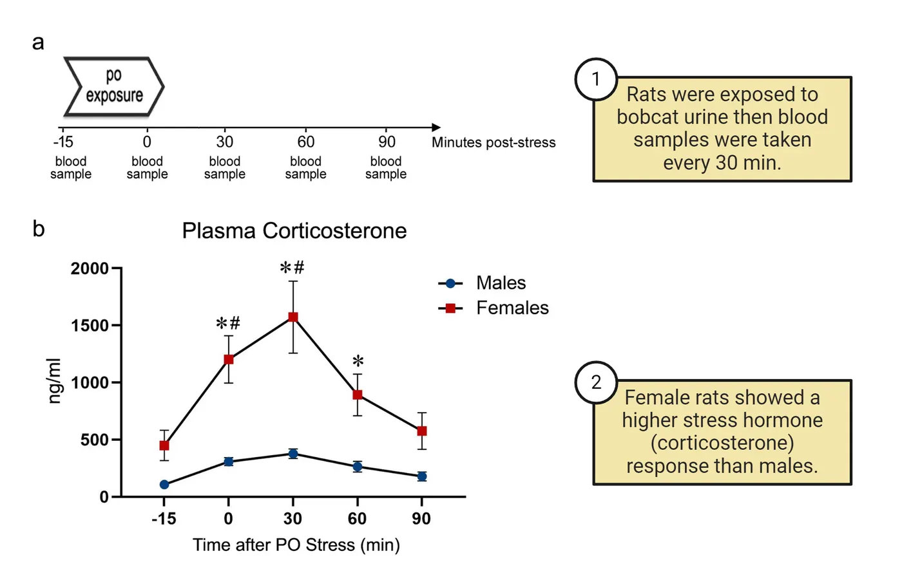
At least some of these sex differences in stress hormone response seem to be mediated by circulating gonadal steroid hormone effects during adulthood (Oyola and Handa 2017). In males, removal of the testes, which decreases overall levels of androgens like testosterone, results in increased activation of neural and hormonal stress responses (Bingaman et al. 2008). Interestingly, the effects of androgens on limiting the hormonal stress responses seem to be largely mediated by activational effects. Androgen replacement in castrated males normalizes adrenal stress hormone levels (Bingaman et al. 2008). Moreover, treating adult female mice with testosterone reduces adrenal stress hormone release and depression-like behavioral responses to stress, aligning them more closely with male levels, whereas early developmental testosterone treatment does not have this effect (Goel and Bale 2008). However, testosterone is not the only steroid hormone modulating stress responses. Ovariectomy in females, which decreases circulating levels of estrogen and progesterone, reduces activation of stress systems (Haas and George 1989; Handa and Weiser 2014), which is reversed by adult treatment with estradiol. This suggests an activational effect of estrogens in exacerbating hormonal responses to stress.
Sex Differences in Monoamines
Monoamines are a group of neurotransmitters, including serotonin, dopamine, and norepinephrine, that play crucial roles in regulating mood, arousal, and cognition. Monoamine neurotransmitter system nuclei and projections shows a reminder of where the major nuclei are for these systems and where their neurons project to (see Introduction).
![Left: Diagram of a human brain with networks of serotonin projections throughout the cortex, cerebellum and down the spinal cord shown. Cell bodies are concentrated in the brain stem (raphe nuclei). Middle: Diagram of a human brain with networks of dopamine projections throughout the cortex and down the spinal cord shown. Cell bodies are concentrated in the brain stem (substantia nigra and ventral tegmental area). Right: Diagram of a human brain with networks of norepinephrine projections throughout the cortex, cerebellum and down the spinal cord shown. Cell bodies are concentrated in the brain stem (locus coeruleus).](../assets/textbook/img/Image-11.26_Monoamine-neurotransmitter-system-nuclei-and-projections.webp)
These neurotransmitter systems have long been associated with depression and anxiety disorders, as outlined in the biogenic amine theory of mood disorders. This theory posits that monoamine levels in the synaptic gap, i.e., the space between neurons where neurotransmitters are released and received, are decreased in patients with mood disorders. According to this theory, increasing the availability of monoamines, either by limiting their breakdown (the process by which enzymes like monoamine oxidase degrade neurotransmitters) or by blocking their reuptake (the process by which neurotransmitters are reabsorbed by the neuron that released them via transporters such as the serotonin transporter), would result in symptom improvement. Indeed, this is how the majority of currently used antidepressant and anxiolytic drugs exert their efficacy: by increasing the synaptic levels of monoamines (Peng et al. 2015). Although this hypothesis is now considered to be at least partially incomplete (Boku et al. 2018), sex differences in monoaminergic neurotransmission could certainly contribute to sex differences in mood disorders. Below, we will discuss some of the known sex differences in serotonergic and dopaminergic circuits that could contribute to sex differences in psychiatric disorders.
Sex Differences in Serotonergic Circuits
Serotonergic circuits in the brain involve neurons that produce and release serotonin, a neurotransmitter crucial for regulating mood, appetite, sleep, memory, and learning. These neurons primarily originate in a group of nuclei in the brainstem called the raphe nuclei. From the raphe nuclei, serotonergic neurons project to various parts of the brain, including the cerebral cortex, limbic system, and spinal cord, influencing a wide range of physiological and psychological functions (Monoamine neurotransmitter system nuclei and projections). Interestingly, many neuropsychiatric disorders with aggravated manifestations in women, such as depression and anxiety, are associated with deficient serotonergic neurotransmission. Conversely, neuropsychiatric conditions that affect more males than females, such as autism spectrum disorder (ASD) and attention-deficit/hyperactivity disorder (ADHD), are often associated with excessive production of serotonin.
Interestingly, the synthesis, metabolism, and reuptake of serotonin are influenced by steroid hormones. In mice, for example, levels of tryptophan hydroxylase (a major enzyme required to make serotonin in neurons, see Introduction) fluctuate across the estrus cycle, with increased levels during the earlier stages characterized by higher estrogen levels (Berman et al. 2006). There are also sex differences in how the serotonergic system responds to stress. A study in rats, for example, showed that females, compared to males, are more vulnerable to developing depressive and anxiety-like behaviors after exposure to chronic mild stress and that this is associated with decreased serotonergic activity in the hippocampus and hypothalamus (Dalla et al. 2005). This study, along with others, suggest that females may be more vulnerable to develop depression and anxiety in part because their serotonergic system does not engage the same protective circuits that help males mitigate the negative effects of stress.
Sex Differences in Dopaminergic Circuits
Dopaminergic circuits in the brain involve neurons that produce and release dopamine, a neurotransmitter essential for regulating reward, motivation, attention, and motor control. These neurons primarily originate in areas such as the substantia nigra and the ventral tegmental area (VTA). From these regions, dopaminergic neurons project to various parts of the brain, including the nucleus accumbens, prefrontal cortex, and limbic system, influencing a wide range of physiological and psychological functions (Monoamine neurotransmitter system nuclei and projections).
Like with serotonin, several sex differences in dopaminergic-related activity have been found. For example, important sex differences have been found in the release of dopamine, which is mediated by circulating ovarian hormones. In rats, extracellular dopamine concentrations in the nucleus accumbens vary with estrous cycle stages in females, with the highest levels occurring during proestrus and estrus (when ovarian hormones are highest and immediately after) and lower levels during metestrus and diestrus (Xiao and Becker 1994), suggesting that estrogen and progesterone increase dopamine release. Sex differences in dopaminergic responses to stress have also been noted, which could contribute to sex differences in depressive disorders. For example, exposure to chronic mild stress in rats results in stronger depressive-like behavior responses in females compared to males, which is accompanied by a greater attenuation of activity of dopaminergic neurons in the VTA in females (Rincón-Cortés and Grace 2017).
Ovarian hormone-dependent sex differences in dopaminergic neurotransmission could also contribute to sex differences in behaviors associated with addiction. For example, a study assessing conditioned place preference to cocaine found that females show higher levels of place preference compared with males only when they are conditioned during proestrus/estrus. Conditioned place preference is a behavioral paradigm used to measure the rewarding effects of drugs by associating a specific environment with drug exposure. Sex differences in drug-motivated behavior diagrams the basics of this test. In short, mice are injected with either saline (a control) or cocaine (a rewarding drug) while in two different chambers of a 3-chamber apparatus. Then the mice are allowed to choose which chamber they prefer to spend time in: the one where they got a saline injection or the one where they got a cocaine injection. Animals spend more time in the environment where they received the drug if they find it rewarding. Interestingly, the increased place preference in females was accompanied by increased VTA dopamine neuron activity, increased dopamine release in the nucleus accumbens, and increased drug potency. These factors result in long-lasting associations that enhance drug responses in female mice that extend beyond the estrus phase (Calipari et al. 2017).
![Top shows a 3 part diagram of steps in conditioned place preference. 1) Male and female mice were injected with saline when in one side of a conditioned place preference chamber. 2) On different days, they were injected with cocaine while in the opposite chamber. 3) After training with injections in both chambers, mice are given free choice to spend time in either chamber. Bottom shows a graph of performance score (y-axis) versus groups (male, oestrus female, dioestrous female). All mice show preference for spending time in the cocaine-associated chamber but females trained during estrus showed the most preference.](../assets/textbook/img/Image-11.29_Sex-differences-in-drug-motivated-behavior.webp)
Social Behaviors: Vasopressin and Oxytocin
Vasopressin and oxytocin are two distinct neuropeptides that play crucial roles in regulating a wide range of social and stress-related behaviors. One of the main sources of both vasopressin and oxytocin are the magnocellular cells of the hypothalamic nuclei. From here, vasopressin and oxytocin each reach the posterior lobe of the hypophysis (pituitary gland) via the hypothalamic-hypophyseal tract, where it is stored until released into the blood. Hormones of the hypothalamus and pituitary shows the anatomy of this system alongside the GnRH-anterior pituitary system of the HPG axis we learned about in previous sections.
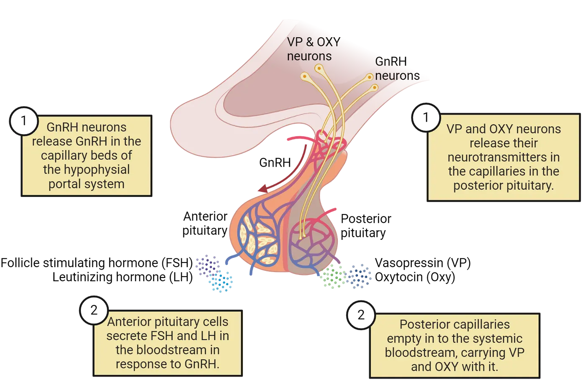
Vasopressin and oxytocin released via this system can affect the brain and behavior by acting as neurohormones which reach the brain via the blood. It is important to note, however, that vasopressin and oxytocin can also act as neurotransmitters. This works by neurons that synthesize oxytocin or vasopressin directly sending projections to other brain regions, (including brain regions modulating anxiety behaviors, such as the amygdala, and motivated behaviors, such as the nucleus accumbens), where they locally release them to modulate behavior.
Sex Differences in Vasopressin Circuits
Some studies have highlighted sex-specific effects of vasopressin modulation on anxiety and social responses to stress. For example, deleting vasopressin-expressing cells in the hypothalamus of adult mice increases social investigation only in females and anxiety-related behaviors in the elevated plus maze only in males (Rigney et al. 2020). Additionally, social defeat stress increases expression of vasopressin receptors in the nucleus accumbens only in females (Duque-Wilckens et al. 2016) and results in a long-term reduction of vasopressinergic synthesis in the hypothalamus only in males (Steinman et al. 2015). Together, these findings suggest that the behavioral endpoints affected by vasopressin are different between the sexes, indicating sex-specific underlying mechanisms. Much more work is needed to identify these mechanisms and determine whether vasopressin in other regions can drive sex differences in behavior.
Sex Differences in Oxytocin Circuits
The oxytocin neurons of the hypothalamic-hypophyseal tract play a crucial role in facilitating lactation and parturition. Beyond these well-documented roles, oxytocin also influences a range of behaviors through its action within the brain, significantly modulating stress responses, anxiety levels, and social behaviors. This is important, because the way our brains process stress and social interactions can affect our predisposition to develop disorders such as anxiety and depression, both of which we learned are more common in women compared to men. Supporting a role of oxytocin in sex differences in depression and anxiety disorders, there are sex differences in oxytocin brain circuits. For example, compared to males, females exhibit reduced expression of oxytocin receptors in several brain regions, including the hypothalamus and the posterior nucleus accumbens, where oxytocin modulates stress, motivated, and social behaviors. Interestingly, the expression of oxytocin receptor in these areas seems to also be modulated by ovarian hormones, as their expression is higher in females when estrogen levels are higher within the estrous cycle (Dumais et al. 2013). In addition, stress-related activation of oxytocin circuits that contribute to social anxiety resolves quickly in males but can persist for several weeks in females (Duque-Wilckens et al. 2018; 2020). This finding suggests that in females, this circuit is more sensitive to long-lasting activation, potentially explaining female-biased presentation of social anxiety disorders in humans.
Summary
In this section, we delved into the neurobiological underpinnings of sex differences in brain circuits underlying behavioral responses related to stress, motivation, and social interactions, which has implications for understanding sex differences in the prevalence and manifestation of psychological and psychiatric disorders. We learned about specific brain circuits that use neurotransmitters like CRH, serotonin, and oxytocin, and how these are different between sexes largely stemming from differences in circulating steroid hormones secreted by male and female gonads throughout the lifespan. Lastly, we introduced the possible role that immune cells like microglia and mast cells, who also reside in the brain along neurons, have in contributing to these sex differences.
Key terms
Monoamines, serotonin, dopamine, mast cells, microgliaReferences
Altemus, M., Sarvaiya, N., & Epperson, C. N. (2014). Sex differences in anxiety and depression clinical perspectives. Frontiers in Neuroendocrinology, 35(3), 320–330. https://doi.org/10.1016/j.yfrne.2014.05.004.
Bangasser, D. A., & Wiersielis, K. R. (2018). Sex differences in stress responses: A critical role for corticotropin-releasing factor. Hormones, 17(1), 5–13. https://doi.org/10.1007/s42000-018-0002-z.
Berman, N. E. J., Puri, V., Chandrala, S., Puri, S., Macgregor, R., Liverman, C. S., & Klein, R. M. (2006). Serotonin in trigeminal ganglia of female rodents: Relevance to menstrual migraine. Headache, 46(8), 1230–1245. https://doi.org/10.1111/j.1526-4610.2006.00528.x.
Bingaman, E. W., Magnuson, D. J., Gray, T. S., & Handa, R. J. (2008). Androgen inhibits the increases in hypothalamic corticotropin-releasing hormone (CRH) and CRH-immunoreactivity following gonadectomy. Neuroendocrinology, 59(3), 228–234. https://doi.org/10.1159/000126663.
Boku, S., Nakagawa, S., Toda, H., & Hishimoto, A. (2018). Neural basis of major depressive disorder: Beyond monoamine hypothesis. Psychiatry and Clinical Neurosciences, 72(1), 3–12. https://doi.org/10.1111/pcn.12604.
Calipari, E. S., Juarez, B., Morel, C., Walker, D. M., Cahill, M. E., Ribeiro, E., Roman-Ortiz, C., et al. (2017). Dopaminergic dynamics underlying sex-specific cocaine reward. Nature Communications, 8(January), 13877. https://doi.org/10.1038/ncomms13877.
Dalla, C., Antoniou, K., Drossopoulou, G., Xagoraris, M., Kokras, N., Sfikakis, A., & Papadopoulou-Daifoti, Z. (2005). Chronic mild stress impact: Are females more vulnerable? Neuroscience, 135(3), 703–714. https://doi.org/10.1016/j.neuroscience.2005.06.068.
Dumais, K. M., Bredewold, R., Mayer, T. E., & Veenema, A. H. (2013). Sex differences in oxytocin receptor binding in forebrain regions: Correlations with social interest in brain region- and sex-specific ways. Hormones and Behavior, 64(4), 693–701. https://doi.org/10.1016/j.yhbeh.2013.08.012.
Duque-Wilckens, N., Steinman, M. Q., Busnelli, M., Chini, B., Yokoyama, S., Pham, M., Laredo, S. A., et al. (2018). Oxytocin receptors in the anteromedial bed nucleus of the stria terminalis promote stress-induced social avoidance in female California mice. Biological Psychiatry, 83(3), 203–213. https://doi.org/10.1016/j.biopsych.2017.08.024.
Duque-Wilckens, N., Steinman, M. Q., Laredo, S. A., Hao, R., Perkeybile, A. M., Bales, K. L., & Trainor, B. C. (2016). Inhibition of vasopressin V1a receptors in the medioventral bed nucleus of the stria terminalis has sex- and context-specific anxiogenic effects. Neuropharmacology, 110(Pt A), 59–68. https://doi.org/10.1016/j.neuropharm.2016.07.018.
Duque-Wilckens, N., Teis, R., Sarno, E., Stoelting, F., Khalid, S., Dairi, Z., Douma, A., et al. (2022). Early life adversity drives sex-specific anhedonia and meningeal immune gene expression through mast cell activation. Brain, Behavior, and Immunity, 103(July), 73–84. https://doi.org/10.1016/j.bbi.2022.03.009.
Duque-Wilckens, N., Torres, L. Y., Yokoyama, S., Minie, V. A., Tran, A. M., Petkova, S. P., Hao, R., et al. (2020). Extrahypothalamic oxytocin neurons drive stress-induced social vigilance and avoidance. Proceedings of the National Academy of Sciences of the United States of America, 117(42), 26406–26413. https://doi.org/10.1073/pnas.2011890117.
Figueiredo, H. F., Dolgas, C. M., & Herman, J. P. (2002). Stress activation of cortex and hippocampus is modulated by sex and stage of estrus. Endocrinology, 143(7), 2534–2540. https://doi.org/10.1210/endo.143.7.8888.
Goel, N., & Bale, T. L. (2008). Organizational and activational effects of testosterone on masculinization of female physiological and behavioral stress responses. Endocrinology, 149(12), 6399–6405. https://doi.org/10.1210/en.2008-0433.
Haas, D. A., & George, S. R. (1989). Estradiol or ovariectomy decreases CRF synthesis in hypothalamus. Brain Research Bulletin, 23(3), 215–218. https://doi.org/10.1016/0361-9230(89)90150-0.
Han, J., Fan, Y., Zhou, K., Blomgren, K., & Harris, R. A. (2021). Uncovering sex differences of rodent microglia. Journal of Neuroinflammation, 18(1), 74. https://doi.org/10.1186/s12974-021-02124-z.
Handa, R. J., & Weiser, M. J. (2014). Gonadal steroid hormones and the hypothalamo–pituitary–adrenal axis. Frontiers in Neuroendocrinology, 35(2), 197–220. https://doi.org/10.1016/j.yfrne.2013.11.001.
Kessler, R. C., Petukhova, M., Sampson, N. A., Zaslavsky, A. M., & Wittchen, H.-U. (2012). Twelve-month and lifetime prevalence and lifetime morbid risk of anxiety and mood disorders in the United States. International Journal of Methods in Psychiatric Research, 21(3), 169–184. https://doi.org/10.1002/mpr.1359.
Lenz, K. M., Pickett, L. A., Wright, C. L., Davis, K. T., Joshi, A., & McCarthy, M. M. (2018). Mast cells in the developing brain determine adult sexual behavior. The Journal of Neuroscience: The Official Journal of the Society for Neuroscience, 38(37), 8044–8059. https://doi.org/10.1523/JNEUROSCI.1176-18.2018.
Mackey, E., Thelen, K. M., Bali, V., Fardisi, M., Trowbridge, M., Jordan, C. L., & Moeser, A. J. (2020). Perinatal androgens organize sex differences in mast cells and attenuate anaphylaxis severity into adulthood. Proceedings of the National Academy of Sciences of the United States of America, 117(38), 23751–23761. https://doi.org/10.1073/pnas.1915075117.
Oyola, M. G., & Handa, R. J. (2017). Hypothalamic–pituitary–adrenal and hypothalamic–pituitary–gonadal axes: Sex differences in regulation of stress responsivity. Stress, 20(5), 476–494. https://doi.org/10.1080/10253890.2017.1369523.
Peng, G., Tian, J., Gao, X., Zhou, Y., & Qin, X. (2015). Research on the pathological mechanism and drug treatment mechanism of depression. Current Neuropharmacology, 13(4), 514–523. https://doi.org/10.2174/1570159x1304150831120428.
Rigney, N., Whylings, J., de Vries, G. J., & Petrulis, A. (2020). Sex differences in the control of social investigation and anxiety by vasopressin cells of the paraventricular nucleus of the hypothalamus. Neuroendocrinology, 111(6), 521–535. https://doi.org/10.1159/000509421.
Rincón-Cortés, M., & Grace, A. A. (2017). Sex-dependent effects of stress on immobility behavior and VTA dopamine neuron activity: Modulation by ketamine. The International Journal of Neuropsychopharmacology, 20(10), 823–832. https://doi.org/10.1093/ijnp/pyx048.
Silver, R., Silverman, A.-J., Vitković, L., & Lederhendler, I. I. (1996). Mast cells in the brain: Evidence and functional significance. Trends in Neurosciences, 19(1), 25–31. https://doi.org/10.1016/0166-2236(96)81863-7.
Steinman, M. Q., Laredo, S. A., Lopez, E. M., Manning, C. E., Hao, R. C., Doig, I. E., Campi, K. L., Flowers, A. E., Knight, J. K., & Trainor, B. C. (2015). Hypothalamic vasopressin systems are more sensitive to the long term effects of social defeat in males versus females. Psychoneuroendocrinology, 51(January), 122–134. https://doi.org/10.1016/j.psyneuen.2014.09.009.
Wang, H., He, Y., Sun, Z., Ren, S., Liu, M., Wang, G., & Yang, J. (2022). Microglia in depression: An overview of microglia in the pathogenesis and treatment of depression. Journal of Neuroinflammation, 19(1), 132. https://doi.org/10.1186/s12974-022-02492-0.
Xiao, L., & Becker, J. B. (1994). Quantitative microdialysis determination of extracellular striatal dopamine concentration in male and female rats: Effects of estrous cycle and gonadectomy. Neuroscience Letters, 180(2), 155–158. https://doi.org/10.1016/0304-3940(94)90510-x.
Yang, E.-J., Frolinger, T., Iqbal, U., Estill, M., Shen, L., Trageser, K. J., & Pasinetti, G. M. (2024). The role of the Toll like receptor 4 signaling in sex-specific persistency of depression-like behavior in response to chronic stress. Brain, Behavior, and Immunity, 115(January), 169–178. https://doi.org/10.1016/j.bbi.2023.10.006.
Practice The multiple-choice and fill-in-the-blank questions for this section are interactive and live on OpenStax, so they are not carried here: open the book on openstax.org.
Adapted from Introduction to Behavioral Neuroscience by OpenStax, licensed under CC BY-NC-SA 4.0. Access for free at openstax.org. Changes: set in this site’s own pages and type, the images recompressed, the interactive exercises and videos linked rather than carried. This adaptation is offered under the same licence.